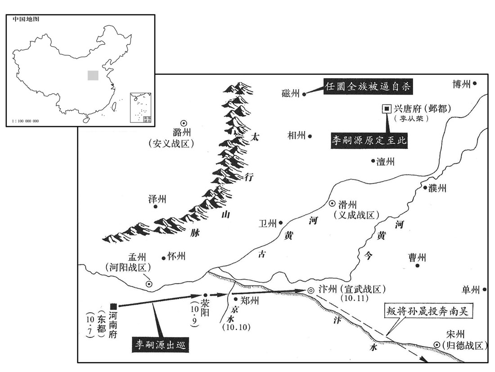
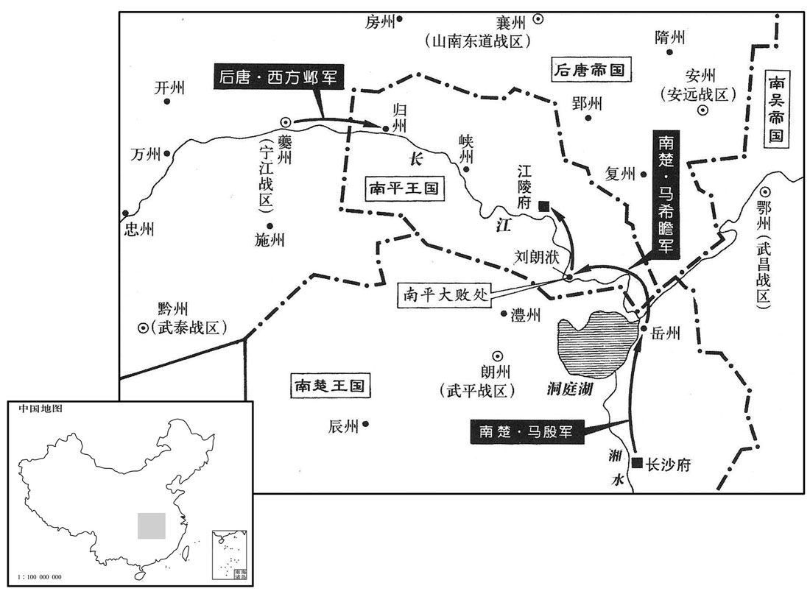
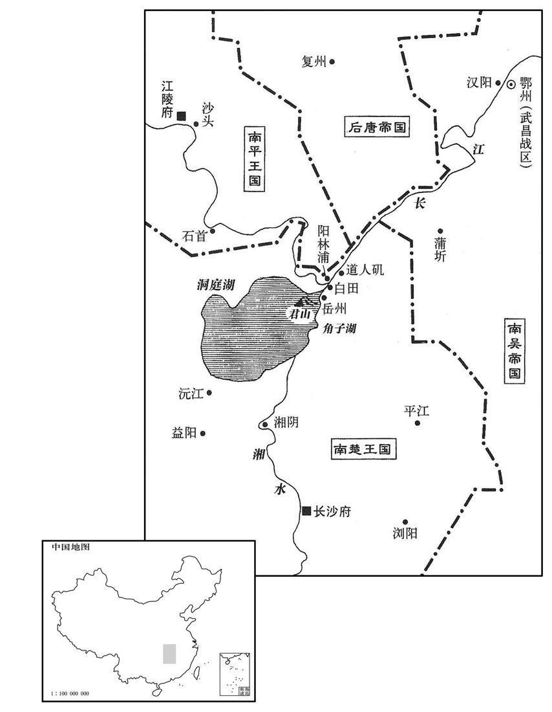
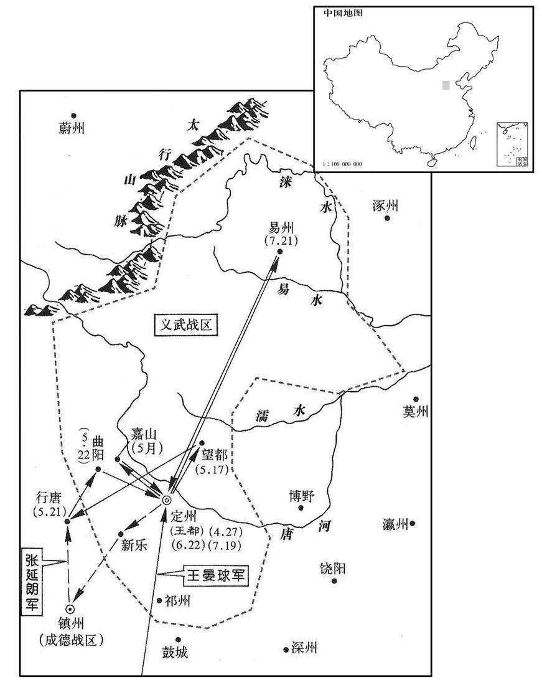
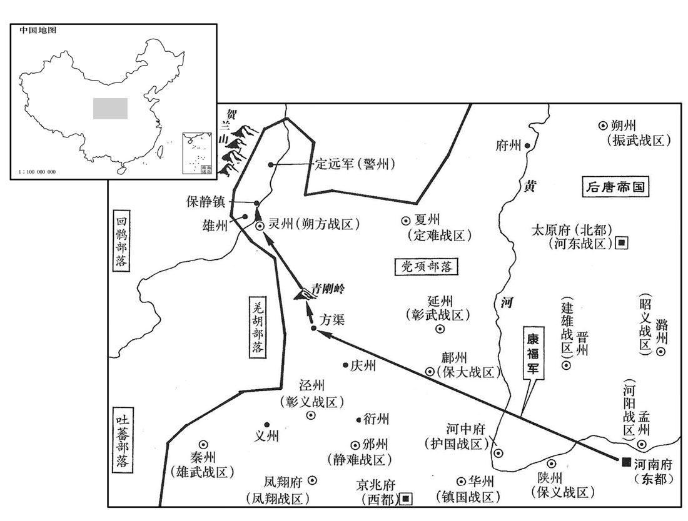
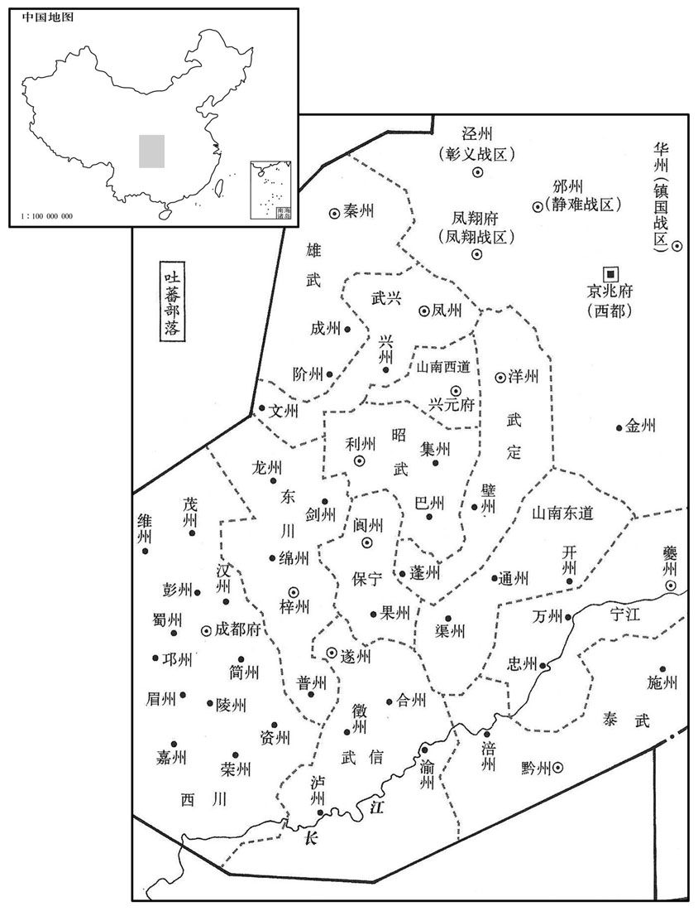

卷次与人物目录 / 卷276
资治通鉴 · 卷第二百七十六【后唐纪五】
公元927年至公元929年 · 原文、白话与胡三省注
本页按胡注本编排保存全卷内容。白话采用本站所据译本，未可靠对应的内容另列说明；事件标题用于定位，并非原书文字。
本卷共124段原文，122段有译文对应，2段缺译或待核对。
卷第二百七十六【后唐纪五】起强圉大渊献（丁亥）七月，尽屠维赤奋若（己丑），凡二年有奇。
卷首原文与注释
明宗圣德和武钦孝皇帝中之上
公元927年 · 后唐明宗圣德和武钦孝皇帝天成二年
天成二年〔（丁亥、九二七）〕
上传原文的注释括号有异常，字符原样保留；无法可靠划分的段落默认全文显示。
本年记事分属相邻卷，按原书顺序分别保留：第275卷 · 第276卷。
本年事件索引（现代整理）
- 后唐任王晏球为北面副招讨使
- 后唐升夔州为宁江军任西方邺为节度使
- 豆卢革韦说因后唐割三州给高季兴被赐死
- 后唐将段凝温韬刘训分别贬谪
- 任圜请求退休获准居磁州
- 后唐发生日食
- 楚王马殷接受册封建立楚国制度
- 明宗命安重诲约束劝李从荣远离儒生的近侍
- 李彦超恢复符姓
- 孔循兼任东都留守
- 契丹遣使请求与后唐修好
- 明宗自洛阳赴汴州
- 朱守殷因疑明宗将讨吴而据汴州反叛
- 安重诲奉命赐死任圜
- 明宗抵大梁攻城朱守殷自杀
- 后唐免除三司近二百万缗积欠
- 吴国权臣徐温卒
- 徐知询曾请代徐知诰执政徐温病逝后知诰掌吴政
- 张筠因病久不见属吏并诬副使谋反被徙职
- 后唐任石敬瑭为宣武节度使兼亲军都指挥使
- 吴王杨溥即皇帝位追尊先王为帝
- 明宗拒绝安重诲伐吴之议
- 吴大赦并改元乾贞
- 吴尊王氏为皇太后并任徐知询徐知诰掌军政
- 孟知祥发民夫二十万修筑成都城
- 吴主封宗室为王
- 赵凤劝明宗勿召相士周玄豹入朝
- 后唐追尊先祖并在应州旧宅立庙
- 南汉主巡幸康州
- 蔚州代州边境谷价低廉
秋，七月，以归德节度使王晏球为北面副招讨使。〔乌震既死，以王晏球代之。按薛史，是年七月甲辰诏曰：「本朝亲王遥领方镇，遂有副大使知节度使，传代已深，相沿未改。其西川、东川今后落副大使，只云节度使。」寻诸镇皆正授节度使。〕
秋季，七月，任命归德节度使王晏球为北面副招讨使。
丙寅，升夔州为宁江军，以西方邺为节度使。〔赏破高季兴军，复夔、忠、万之功也。蜀以夔州为镇江军，今改为宁江军。〕
丙寅（十七日），把夔州升为宁江军，任命西方邺为节度使。
癸巳，〔【章：十二行本「巳」作「酉」；乙十一行本同；张校同，云无注本亦误「巳」。】〕以与高季兴夔、忠、万三州为豆卢革、韦说之罪，〔元年以三州与季兴，革、说犹为相，因以此罪之。〕皆赐死。
癸酉（二十四日），以上年给高季兴夔、忠、万三州一事定为豆卢革、韦说的罪行，把他们赐死。
流段凝于辽州，温韬于德州，刘训于濮州。〔自唐末以来，流贬者皆不至其地。辽、德、濮皆唐境也，此三人皆使至流所。〕
把段凝流放到辽州，温韬流放到德州，刘训流放到濮州。
任圜请致仕居磁州，〔磁，墙之翻。〕许之。
任圜请求退休居住在磁州，后唐帝答应了他的请求。
八月，己卯朔，日有食之。
八月，己卯朔（初一），出现日食。
册礼使至长沙，楚王殷始建国，〔封楚王殷为国王见上卷是年六月。〕立宫殿，置百官，皆如天子，或微更其名：〔示不敢拟天朝也。更，工行翻。〕翰林学士曰文苑学士，知制诰曰知辞制，枢密院曰左右机要司，群下称之曰殿下，令曰教。以姚彦章为左丞相，许德勋为右丞相，李铎为司徒，崔颖为司空，拓跋恒为仆射，张彦瑶、张迎判机要司。〔马殷所恃以为国者高郁也，建国置官，郁不与焉，何也﹖岂殷诸子已有忌郁之心欤﹖〕然管内官属皆称摄，惟朗、桂节度使先除后请命。〔朗，武平军，桂，静江军，时皆属楚。〕恒本姓元，避殷父讳改焉。
册礼使到达长沙，楚王马殷开始建国，他建立宫殿，设置百官，都和天子一样，有的稍变更一下名称，翰林学士叫文苑学士，知制诰叫知辞制，枢密院叫左右机要司，臣下称国王为殿下，国王下的命令称教令。任命姚彦章为左丞相，许德勋为右丞相，李铎为司徒，崔颖为司空，拓跋恒为仆射，张彦瑶、张迎判管机要部门。然而管内官属都称为摄，只有朗、桂节度使是先任命后请求国王批准。拔跋恒本姓元，为避马殷父亲讳才改为拓跋。
九月，帝谓安重诲曰：「从荣左右有矫宣朕旨，令勿接儒生，恐弱人志气者。朕以从荣年少临大藩，〔是年三月从荣镇邺都，事见上卷。少，诗照翻。〕故择名儒使辅导之，今奸人所言乃如此！」欲斩之；重诲请严戒而已。〔安重诲非儒也，故宽言者之罪。独不思矫宣上旨，国有常刑邪！〕
九月，后唐帝对安重诲说：“李从荣身边有人假传朕的旨意，让他不要接近儒生，恐怕削弱人的志气。朕因为李从荣年轻，又管理大藩，所以给他选择了名儒来辅导他，没想到现在这些奸人们竟讲出这种话！”后唐帝想把这些假传圣旨的人斩掉。安重诲请求对这些人只是严加防备而已。
北都留守李彦超请复姓符，从之。〔彦超，李存审子；存审本姓符。〕
北都留守李彦超请求恢复他姓符，后唐帝答应了他的请求。
丙寅，以枢密使孔循兼东都留守。〔帝欲东巡，使孔循留守洛阳。庄宗同光三年，复以洛阳为东部。
本段缺少可靠对应白话，原文完整保留；未使用生成译文。
壬申，契丹来请修好，〔好，呼到翻。〕遣使报之。
壬申（二十四日），契丹来人请求互通友好，后唐派遣使者回报契丹人。
冬，十月，乙酉，帝发洛阳，将如汴州；丁亥，至荥阳。〔九域志：荥阳县在郑州西六十里，东至大梁一百四十里。〕
冬季，十月，乙酉（初七），后唐帝从洛阳出发去汴州。丁亥（初九），到达荥阳。
民间讹言帝欲自击吴，又云欲制置东方诸侯。宣武节度使、检校侍中朱守殷疑惧，判官高密孙晟劝守殷反，〔高密，汉古县，隋乱废，唐武德三年置于义城堡，六年移就故夷安城，即高密古县也，属密州。九域志：在州东北一百二十里。考异曰：江南录作「孙忌」。今从王溥周世宗实录。晟，承正翻。〕守殷遂乘城拒守。帝遣宣徽使范延光往谕之，延光曰：「不早击之，则汴城坚矣；愿得五百骑与俱。」帝从之。延光暮发，未明行二百里，抵大梁城下，与汴人战，汴人大惊。戊子，帝至京水，〔京水在荥阳之东，索水之西。〕遣御营使石敬瑭将亲兵倍道继之。〔自梁以来，有侍卫亲军、侍卫马军、侍卫步军。〕
民间谣传后唐帝打算亲自率兵攻打吴国，又传说要制服东方诸侯。宣武节度使、检校侍中朱守殷对此疑惧，判官高密人孙晟劝朱守殷反叛，于是朱守殷登上汴州城坚守。后唐帝派遣宣徽使范延光前去告示朱守殷，范延光说：“如不及早攻打他们，汴州就会越来越坚固。我希望率领五百骑兵一起前往。”后唐帝听从了他的建议。范延光在太阳落山时出发，第二天天还没有亮就走了二百里，直抵汴州城下，和汴州的人交锋，汴州人感到非常吃惊。戊子（初十），后唐帝到达京水，派遣御营使石敬瑭率领禁卫军日夜兼程去增援范延光。
或谓安重诲曰：「失职在外之人，乘贼未破，或能为患，不如除之。」重诲以为然，奏遣使赐任圜死。〔任圜罢相见上卷是年六月。〕端明殿学士赵凤哭谓重诲曰：「任圜义士，安肯为逆！公滥刑如此，何以赞国！」使者至磁州，圜聚其族酣饮，然后死，神情不挠。〔挠，奴教翻。〕
有人对安重诲说：“那些被免除官职而在外面的人，乘乱贼还未被击败，或许能成为祸患，不如把他们消灭了。”安重诲认为说得对，于是上奏请求派遣使者赐任圜死。端明殿学士赵凤哭着对安重诲说：“任圜是个讲道义的人，怎么肯叛逆呢？你如此滥用刑法，怎么能辅佐国家。”前往赐任圜死的使者到达磁州，任圜把他的家族集合起来喝酒，然后死去，表情没有屈服的样子。
己丑，帝至大梁，四面进攻，吏民缒城出降者甚众。〔缒，驰伪翻。〕守殷知事不济，尽杀其族，引颈命左右斩之。乘城者望见乘舆，〔乘，承正翻。〕相帅开门降。〔帅，读曰率；下同。〕孙晟奔吴，徐知诰客之。〔为孙晟尽节于江南张本。〕
己丑（十一日），后唐帝到汴州，四面向汴州城发起进攻，官吏和百姓从城上缒绳出来投降的人很多。朱守殷知道事情不能成功，于是把他的家族全部杀掉，又伸出脖子让左右把他杀死。登上城的人们望见了后唐帝圣驾，都争着打开城门出来投降。孙晟逃奔到了吴国，徐知诰以客相待。

戊戍，诏免三司逋负近二百万缗。〔近，其靳翻。〕
戊戌（二十日），后唐帝下诏免去三司拖欠的赋税近二百万缗。
辛丑，吴大丞相、都督中外诸军事、诸道都统、镇海‧宁国节度使兼中书令东海王徐温卒。
辛丑（二十三日），吴国大丞相、都督中外诸军事、诸道都统、镇海与宁国节度使兼中书令东海王徐温去世。
初，温子行军司马、忠义节度使、同平章事知询以其兄知诰非徐氏子，〔徐温养知诰为子，见二百六十卷唐昭宗干宁二年。〕数请代之执吴政，〔数，所角翻。〕温曰：「汝曹皆不如也。」严可求及行军副使徐玠屡劝温以知询代知诰，〔徐知诰之于严可求，结之以婚姻，而可求之心不为之变。徐温之门，忠于所事者，严可求、陈彦谦而已。〕温以知诰孝谨，不忍也。陈夫人曰：「知诰自我家贫贱时养之，〔陈夫人，徐温之妻，子畜知诰者也。〕柰何富贵而弃之！」可求等言之不已。温欲帅诸藩镇入朝，劝吴王称帝，〔帅，读曰率。〕将行，有疾，乃遣知询奉表劝进，因留代知诰执政。知诰草表欲求洪州节度使，俟旦上之，〔上，时两翻。〕是夕，温凶问至，乃止。〔史言徐知诰得吴国之政，亦有数存乎其间；篡吴之业自此成矣。〕知询亟归金陵。〔为知诰、知询不相容张本。〕吴主赠温齐王，谥曰忠武。
当初，徐温的儿子行军司马、忠义节度使、同平章事徐知询认为他的哥哥徐知诰不是徐氏的儿子，曾多次请求代替他执掌吴国国政，徐温说：“你们都不如他。”严可求以及行军副使徐也屡次劝说徐温让徐知询代替徐知诰，徐温认为徐知诰孝顺谨慎，不忍心让徐知询代替他。陈夫人说：“徐知诰是在我们贫穷时就收养了的，怎么能够富贵以后就抛弃他呢？”但严可求等仍然劝不说不已。徐温打算率领诸藩镇的官员入朝劝说吴王称帝，将要出发时突然生病，于是就派遣徐知询拿着奏表去劝吴王称帝，因而留下代替徐知诰处理政事。徐知诰起草了奏表想请求出任洪州节度使，打算第二天早晨送上去，这天晚上，徐温的死讯传来，才没有上表。徐知询很快回到金陵。吴主赠徐温为齐王，谥号叫忠武。
山南西道节度使张筠久疾，将佐请见，不许。副使符彦琳等疑其已死，恐左右有奸谋，请权交符印；筠怒，收彦琳及判官都指挥使下狱，诬以谋反。〔下，遐嫁翻。〕诏取彦琳等诣阙，按之无状，释之；〔观于可洪、张筠之事，帝之庙号曰明，亦有以也。〕徙筠为西都留守。〔庄宗同光三年，复以长安为西都。〕
山南西道节度使张筠病了好长时间，将佐们请求相见，没有得到允许。副使符彦林等怀疑他已经死去，害怕张筠的左右人员有阴谋，于是请求暂交符印。张筠知道后十分生气，下令拘捕了符彦琳以及判官都指挥使等，并把他们送进监狱，以谋反来诬陷他们。后唐帝取符彦琳等上朝，经过核查后发现符彦琳没有谋反的证据，就把他释放了。调张筠为西都留守。
癸卯，以保义节度使石敬瑭为宣武节度使，〔朱守殷反死，以石敬瑭代之。〕兼侍卫亲军马步都指挥使。
癸卯（二十五日），任命保义节度使石敬瑭为宣武节度使，兼任侍卫亲军马步都指挥使。
十一月，庚戍，吴王即皇帝位，追尊孝武王曰武皇帝，景王曰景皇帝，宣王曰宣皇帝。〔考武王，忠武王行密也；景王，威王渥也；宣王者，隆演也。〕
十一月，庚戌（初三），吴王即皇帝位，追尊孝武王为武皇帝，景王为景皇帝，宣王为宣皇帝。
安重诲议伐吴，〔安重诲欲乘徐温之死而伐之，且问其举大号之罪。〕帝不从。〔根本不固而伐人之国，庄宗覆车可鉴也；故不许。〕
安重诲商议想讨伐吴国，后唐帝没有听从他的意见。
甲子，吴大赦，改元干贞。
两版字句有差异，建议核对原文。
甲子（十七日），吴国实行大赦，改年号为乾贞。
丙子，吴主尊太妃王氏曰皇太后，以徐知询为诸道副都统、镇海宁国节度使兼侍中，〔若使之徐温之官职者。〕加徐知诰都督中外诸军事。〔吴国中外大权实皆归于徐知诰。〕
两子（二十九日），吴主尊太妃王氏为皇太后。任命徐知询为诸道副都统、镇海宁国节度使兼侍中，加封徐知诰都督中外诸军事。
十二月，戊寅朔，孟知祥发民丁二十万修成都城。
十二月，戊寅朔（初一），孟知祥征发二十万民丁修建成都城。
吴主立兄庐江公蒙为常山王，弟鄱阳公澈为平原王，〔澈，敕列翻。〕兄子南昌公琪为建安王。〔琪，居勇翻。吴主称帝，封其兄弟及其兄子皆自公升王。〕
吴主立其兄庐江公杨为常山王，立其弟鄱阳公杨澈为平原王，立其兄的儿子南昌公杨为建安王。
初，晋阳相者周玄豹〔相，息亮翻。〕尝言帝贵不可言，帝即位，欲召诣阙；赵凤曰：「玄豹言陛下当为天子，今已验矣，无所复询。〔复，夫又翻。〕若置之京师，则轻躁狂险之人必辐辏其门，争问吉凶。自古术士妄言，致人族灭者多矣，非所以靖国家也。」〔史言赵凤有识。〕帝乃就除光禄卿致仕，厚赐金帛而已。
当初，晋阳有个会相面的人叫周玄豹，他曾经说后唐帝的相貌贵不可言，后唐帝即位之后，打算把他召到朝廷里来。赵凤说：“周玄豹曾经说过陛下当为天子，今天已经验证，没有必要再查询他了。如果把他留在京师，那些轻举妄动、性情暴躁、狂放不拘等危险人物就一定会聚集到他的门下，争相询问凶吉。自古以来那些巫祝占卜之流经常胡说八道，致使很多人全家被诛灭，这些人根本不能用来安定国家。”后唐帝任命他为光禄卿，并以此职退休，只赏给他很多金帛而已。
中书舍人马缟〔缟，工老翻。〕请用汉光武故事，七庙之外别立亲庙；〔见四十一卷汉光武建武三年。〕中书门下奏请如汉孝德、孝仁皇例，称皇不称帝。〔孝德皇见五十卷汉安帝建光元年；孝仁皇见五十六卷灵帝建宁元年。〕帝欲兼称帝，群臣乃引德明、玄元、兴圣皇帝例，皆立庙京师；〔唐尊皋陶为德明皇帝，老子为玄元皇帝，凉武昭王为兴圣皇帝。例，时诣翻。〕帝令立于应州旧宅，自高祖考妣以下皆追谥曰皇帝、皇后，墓曰陵。〔五代会要：帝追尊高祖聿为孝恭皇帝，庙号惠祖，陵曰顺陵，妣崔氏曰昭皇后；曾祖教曰孝质皇帝，庙号毅祖，陵曰衍陵，妣张氏曰顺皇后；祖琰日孝靖皇帝，庙号烈祖，陵曰奕陵，妣何氏曰穆皇后；父霓曰孝成皇帝，庙号德祖，陵曰庆陵。欧史曰：高祖妣刘氏，曾祖讳敖，父孝成，妣刘氏谥懿皇后，四陵皆在应州金城县。按帝之先本夷狄，既无姓氏，其名必当时有司所制也。〕
中书舍人马缟请求用汉光武时的典章制度，七庙之外另立一个亲庙。中书门下上奏请求象汉教德、教仁皇那样，称皇不称帝。后唐帝想兼称帝，大臣们于是就引用德用、玄元、兴圣皇帝的例子，都在京师立庙。后唐帝命令在应州旧宅立庙，从高祖的父母以下都追谥为皇帝、皇后，他们的墓都称为陵。
汉主如康州。〔九域志：广州南至康州一百九十里。〕
南汉主到达康州。
是岁，蔚、代缘边粟斗不过十钱。〔蔚，纡勿翻。〕
这一年，蔚、代沿边境的地方一斗粮食的价钱不到十钱。
译本中未与胡注本可靠对应的内容
以下另列供核对版本差异，不并入胡注本正文。
译本所附古文
[10]丙寅，以枢密使孔循兼东都留守。
译本白话
丙寅（十八日），任命枢密使孔循兼任东都留守。
公元928年 · 后唐明宗圣德和武钦孝皇帝天成三年
三年〔（戊子、九二八）〕
本年事件索引（现代整理）
- 吴主封诸子及宗室为王
- 毛璋在昭义任内暴虐骄横被征入朝
- 契丹攻陷平州
- 后唐发生日食
- 明宗因扈从军家属不愿迁往邺都而取消行程
- 后唐与吴使者往来中断
- 张筠抵长安被守军拒门后单骑入朝
- 西方邺攻取归州后荆南军夺回
- 孔循结交王德妃女儿并获任忠武节度使
- 明宗欲任华温琪为重镇后安重诲称可由自己代任
- 安重诲与王建立互相指控明宗留安重诲而任王建立为相
- 孟知祥设汉州盐场阻止东川盐商贩运
- 楚军大败高季兴水军逼近江陵后接受求和
- 楚军攻汉围封州被苏章设伏击退
- 李从荣调镇河东石敬瑭任邺都留守
- 楚军于君山大败吴军并俘苗璘王彦章
- 王都密谋联络赵德钧及河北诸镇反叛
- 吴改封杨蒙为临川王
- 后唐削夺王都官爵并派王晏球等讨伐定州
- 后唐任赵敬怡为枢密使
- 王晏球击败王都与契丹联军于曲阳
- 吴遣使向楚求和楚归还被俘将领
- 高季兴向吴称臣吴封其秦王楚军讨荆南后双方和解
- 王晏球攻打定州城损失三千人
- 孟知祥遣蜀兵戍夔州后设法召回
- 后唐以诸侯礼安葬前蜀主王衍
- 北面招讨使安审通卒
- 孔循严惩私酿后唐准许东都按亩征曲钱
- 契丹七千骑救定州被王晏球击溃
- 后唐封王延钧为闽王
- 赵德钧追击契丹俘获惕隐等将领
- 王都使庄宗旧养子李继陶穿黄袍诈称皇子
- 王建立以不识字请求免判三司未获准
- 吴大赦
- 吴越王钱镠选定钱传瓘承袭两镇
- 明宗赦免契丹酋长惕隐等并处死其余俘虏
- 契丹遣使入贡
- 张希崇杀契丹监将率部众归降后唐
- 吴王太后卒
- 荆南军白田之战击败楚军并俘岳州刺史李廷规
- 后唐命令温韬段凝因盗掘陵墓及反复无常赐死
- 后唐派房知温统兵讨伐荆南高季兴
- 窦廷琬被调任金州后据庆州拒绝赴任
- 后唐任李从敏为北面行营副招讨使
- 后唐命李敬通讨伐窦廷琬
- 王晏球建议围困定州等待王都内乱
- 后唐为唐哀帝在曹州建庙
- 平卢节度使霍彦威卒
- 王雅攻取归州
- 孔循借迎娶皇子李从厚之女留居大梁结交王德妃
- 明宗感叹朱友谦郭崇韬受赐铁券后仍遭族灭
- 李敬周攻克庆州并诛窦廷琬
- 高季兴病重命子高从诲权知军府后卒
- 张昭远请明宗为皇子择师并明定嫡庶长幼
- 闽王王延钧度民二万为僧
- 李从荣骄纵受近臣挑拨暗中招兵备变
春，正月，丁巳，吴主立子琏为江都王，璘为江夏王，璆为宜春王，宣帝子庐陵公玢为南阳王。〔琏，力展翻。璘，离珍翻。璆，音求。玢，悲巾翻。吴主谥兄隆演曰宣皇帝。〕
春季，正月，丁巳（初十），吴主立他的儿子杨琏为江都王，杨为江夏王，杨为宜春王，宣帝的儿子庐陵公杨玢为南阳王。
昭义节度使毛璋所为骄僭，时服赭袍，〔赭袍，天子所服。赭，音者。〕纵酒为戏，左右有谏者，剖其心而视之。帝闻之，征为右金吾卫上将军。〔毛璋在邠州以骄僭征，及在潞州复然，谓之不轨可也。然一诏征之则束手入卫，盖其人冥顽骄虐，本无他心，不知僭拟之为非；然亦明宗能容之耳。〕
昭义节度使毛璋的所作所为骄横越轨，有时穿着天子所穿赭袍，狂饮娱乐，左右有规劝他的，他就让人剖其心察看。后唐帝听说此事，征调他为右金吾卫上将军。
契丹陷平州。〔元年冬卢文进来奔，唐得平州，至是复为契丹所陷。〕
契丹人攻陷平州。
二月，丁丑朔，日有食之。
二月，丁丑朔（初一），出现日食。
帝将如邺都，时扈驾诸军家属甫迁大梁，又闻将如邺都，皆不悦，昞昞有流言；〔说，读曰悦。昞，许拱翻。〕帝闻之，不果行。
后唐帝将要到邺都，当时扈驾诸军的家属刚刚迁到大梁，听说要到邺都，都不高兴，流言议论纷纷。后唐帝听说后，没有成行。
吴自庄宗灭梁以来，使者往来不绝、庚辰，吴使者至，安重诲以为杨溥敢与朝廷抗礼，〔并立为帝，是抗礼也。〕遣使窥觇，〔觇，丑廉翻，又丑艳翻。〕拒而不受，自是遂与吴绝。
吴国自从庄宗消灭了后梁国以来，使者往来不断。庚辰（初四），吴国的使者到来，安重诲以为吴王杨溥敢和朝廷抗礼，于是派出使者去暗中窥视，并拒不接受他，从此以后就和吴国断绝了关系。
张筠至长安，〔去年徙张筠留守西都。〕守兵闭门拒之；〔上意也。〕筠单骑入朝，以为左卫上将军。
张筠到了长安，把守城门的士卒关起来不让他进去。张筠单人匹马入朝，后唐帝任命他为左卫上将军。
壬辰，宁江节度使西方邺攻拔归州；未几，荆南复取之。〔归州，高季兴巡属也。九域志：夔州东至归州三百三十里。几，居岂翻。复，扶又翻；下宜复同。〕
壬辰（十六日），宁江节度使西方邺攻下了归州。没过多久，荆南又夺了回去。
枢密使、同平章事孔循，性狡佞，安重诲亲信之。帝欲为皇子娶重诲女，〔为，于伪翻。〕循谓重诲曰：「公职居近密，不宜复与皇子为婚。」重诲辞之。久之，或谓重诲曰：「循善离间人，〔间，古苋翻。〕不可置之密地。」循知之，阴遣人结王德妃，求纳其女；德妃请娶循女为从厚妇，帝许之。〔王德妃有宠于帝，言无不行，后进拜淑妃。〕重诲大怒，乙未，以循同平章事，充忠武节度使兼东都留守。〔解其近密之职。〕
枢密使、同平章事孔循性情狡猾，善于花言巧语，安重诲很亲信他。后唐帝想为他的儿子娶安重诲的女儿为妻子，孔循对安重诲说：“您身为皇上的近臣，你们又很密切，不应再和皇子为婚姻亲戚。”于是安重诲就推辞了女儿的婚事。过一段时间，有人对安重诲说：“孔循善于挑拨离间，不可安排在与皇上密切接触的位置。”孔循知道这件事后，就暗暗派人去巴结王德妃，请求接纳他的女儿。王德妃请求皇帝为皇子李从厚娶孔循的女儿为妻，后唐帝答应了她的请求。安重诲听到这件事后大发雷霆。乙未（十九日），后唐帝任命孔循为同平章事、忠武节度使兼东都留守。
重诲性强愎。〔愎，蒲逼翻。〕秦州节度使华温琪入朝，请留阙下，帝嘉之，〔当时诸帅皆乐在方镇得自恣，独华温琪入朝请留，故嘉之。华，户化翻。〕除左骁卫上将军，月别赐钱谷。〔俸给之外别赐钱谷。〕岁余，帝谓重诲曰：「温琪旧人，宜择一重镇处之。」〔华温琪仕梁已为节镇，故云然。处，昌吕翻。〕重诲对以无阙。他日，帝屡言之，重诲愠曰：「臣累奏无阙，惟枢密使可代耳。」帝曰：「亦可。」重诲无以对。〔华温琪之才诚不足以当重镇，安重诲以君臣相得之雅，详明敷奏，明宗宜无不从；今则上下之言交不能畅其意，相厉而已，斯不学至此也。〕温琪闻之惧，数月不出。
安重诲性情刚愎。秦州节度使华温琪入朝，请求留在朝廷，后唐帝表彰了他，任他为左骁卫上将军，每月除了俸禄外还要赏赐他些钱谷。一年多以后，后唐帝对安重诲说：“华温琪是旧交，应该选择一个重镇来安排他。”安重诲回答说没有空缺。又一天，后唐帝又反复说起这件事，安重诲恼怒地说：“我曾多次上奏说没有空缺，只有枢密使可以代替。”后唐帝说：“也可以。”安重诲无言以对。华温琪听说这件事后感到非常害怕，好几个月不敢出门。
重诲恶成德节度使、同平章事王建立，奏建立与王都交结，有异志。〔恶，乌路翻。初，帝为代州刺史，王建立已为虞候将，后从镇真定。帝自邺为乱兵所逼，举兵南向，建立杀真定监军，帝家属得全，由是爱之；及帝即位，擢为真定帅。安重诲亦帝潜跃之时所亲信者也，即位，自中门使擢枢密使。重诲之所以恶建立，权宠之间耳。又，是时王都在中山有异志，数以书通建立，约为兄弟，故重诲言之。〕建立亦奏重诲专权，求入朝面言其状，帝召之；既至，言重诲与宣徽使判三司张延朗结婚，相表里，弄威福。三月，辛亥，帝见重诲，气色甚怒，谓曰：「今与卿一镇自休息，以王建立代卿，张延朗亦除外官。」重诲曰：「臣披荆棘事陛下数十年，值陛下龙飞，承乏机密，〔承乏者，承人之乏也，言适时乏人，故己得任机密。〕数年间天下幸无事；今一旦弃之外镇，臣烦闻其罪！」帝不怿而起，〔此段自孔循以下言重诲与孔循相倾，自华温琪以下言其君臣嫌隙之所自来。盖重诲挟依乘之旧，恋权而不肯退，明宗积受浸润之谮，欲远之而不能，至于决裂，则不可救矣。〕以语宣徽使朱弘昭，〔语，牛倨翻。〕弘昭曰：「陛下平日待重诲如左右手，柰何以小忿弃之！愿垂三思。」〔朱弘昭今日之言，知重诲之眷未衰也；凤翔之奏，知重诲之权已去也。小人之智，随时而反复，可畏也哉！〕帝寻召重诲慰抚之。明日，建立辞归镇，帝曰：「卿比奏欲入分朕忧，〔比，毗至翻，近也。〕今复去何之！」〔复，扶又翻；下不复同。〕会门下侍郎兼刑部尚书、同平章事郑珏请致仕，己未，以珏为左仆射致仕；癸亥，以建立为右仆射兼中书侍郎、同平章事、判三司。
安重诲很恨成德节度使、同平章事王建立，上奏说王建立和王都互相勾结，有叛变的意图。王建立也奏称，安重诲独揽大权，请求入朝当面向后唐帝说明情况，后唐帝就召见他。他到了朝廷，说安重诲与宣徽使判三司张延朗结为婚姻亲戚，内外勾结，作威作福。三月，辛亥（初五），后唐帝见了安重诲，满脸怒气，对他说：“现在给你一镇自己休息去，用王建立代替你，张延朗也放为外任。”安重诲说：“臣披荆斩棘侍奉陛下数十年，正值陛下兴起，缺乏适当人选，臣任机要，几年来天下平安无事。现在把我抛弃去外，我希望听听有什么罪过。”后唐帝很不高兴地站起来，告诉了宣徽使朱弘昭，朱弘昭说：“陛下平日待安重诲如左右手，怎么能因小的忿怒就抛弃了他呢？希望陛下三思。”不久，后唐帝又召见安重诲安抚慰问。第二天，王建立辞别回镇，后唐帝说：“你近来上奏说，想在朝廷分担我的忧愁，今天又要到哪儿去！”正好这时门下侍郎兼刑部尚书、同平章事郑珏请求退休，己未（十三），命郑珏为左仆射退休。癸亥（十七日），任命王建立为右仆射兼中书侍郎、同平章事、判三司。
孟知祥屡与董璋棦盐利，〔蜀中井盐，东、西川巡属之内皆有之，各欲障固以专其利，故争。按唐盛时，邛、嘉、眉有井十三，剑南西川院领之；梓、遂、绵、合、昌、渝、泸、资、荣、陵、简有井四百六十，剑南东川院领之。东川盐利多于西川矣。〕璋诱商旅贩东川盐戊西川，知祥患之，乃于汉州置三场重征之，〔汉州东南与东川接界，故列置三场以征盐商。〕岁得钱七万缗，商旅不复之东川。〔之，往也。〕
孟知祥曾多次和董璋争夺盐利，董璋引诱商贩们贩东川的盐入西川，孟知祥对此十分忧虑，在汉州修置了三个场地征收商人的重税，一年可以得到税钱七万缗，从此商贩们不再到东川贩盐了。
楚王殷如岳州，遣六军使袁诠、〔谁，丑缘翻。〕副使王环、监军马希瞻将水军击荆南，高季兴以水军逆战。至刘郎洑，〔江陵府石首县沙步有刘郎浦，蜀先主纳吴女处也。洑，房六翻。洄流曰洑。〕希瞻夜匿战舰数十艘于港中；〔舰，户黯翻。艘，疏留翻。港，古项翻。〕诘旦，两军合战，希瞻出战舰横击之，季兴大败，俘斩以千数，进逼江陵。季兴请和，归史光宪于楚。〔高季兴执史光宪见上卷上年。〕军还，〔还，从宣翻，又如字。〕楚王殷让环不遂取荆南，环曰：「江陵在中朝及吴、蜀之间，〔中朝，谓唐也，既在中原，且天朝也。〕四战之地也，〔四面受敌，谓之四战之地。〕宜存之以为吾扞蔽。」〔宋时赵韩王劝太祖缓取太原，意亦如此。〕殷悦。环每战，身先士卒，〔先，悉荐翻。〕与众同甘苦；常置针药于座右，战罢，索伤者于帐前，自傅治之。〔针，诸深翻。索，山客翻。治，直之翻。〕士卒隶环麾下者相贺曰：「吾属得死所矣。」故所向有功。〔史言为将得士卒之死力者胜。〕
楚王马殷到达岳州，派遣六军使袁诠、副使王环、监军马希瞻等率领水军攻打荆南，高季兴也用水军迎战。到了刘郎，马希瞻乘夜间在港中偷偷藏匿下数十艘战船，第二天早晨，两军交战，马希瞻开出战船截击，大败高季兴，俘获和斩杀数以千计，然后进副江陵。高季兴请求讲和，并把史光宪送还楚国。楚军回去后，楚王马殷责备王环不断续前进夺取荆南，王环说：“江陵在唐以及吴、蜀之间，这里四面受敌，应当把它保存下来作为我们屏藩。”马殷听后很高兴。王环每次作战，都身先士卒，和大家同甘共苦。他经常在座位的右侧放一些针和药物，战斗结束后，他就寻找一些受伤的士卒到营帐前，亲自给他们敷药治疗。那些隶属王环的部下都互相称贺说：“我们得到了死后的归所。”所以每次作战，都会建立功勋。

楚大举水军击汉，围封州。〔宋白曰：封州即汉苍梧郡之广信县也，梁置梁信郡，隋置封州，在丰水之阳。〕汉主以周易筮之，遇大有，〔龟为卜，策为筮。以四十九策信手分开，视其耦，三变而成爻，十有八变而成卦。〕于是大赦，改元大有；命左右街使苏章将神弩三千、战舰百艘救封州。〔汉都番禺，仿唐上京，置左、右街使。九域志：广州西至封州六百一十里。〕章至贺江，沈铁焴于水，〔沈，持林翻。焴，居登翻。〕两�之@巨轮挽焴，筑长堤以隐之，伏壮士于堤中。章以轻舟逆战，阳不利，楚人逐之，入堤中；挽轮举焴，楚舰不能进退，以强弩夹水射之，〔射，而亦翻。〕楚兵大败，解围遁去。汉主以章为封州团练使。
楚国发动所有水军向南汉发起攻击，包围了南汉的封州。南汉主用《周易》来占卜这次战争，遇上“大有”卦，于是实行大赦，改年号为大有。南汉主命令左右街使苏章率领三千神射手、一百艘战船去援救封州。苏章到达贺江，把铁链沉在水中，两岸作巨轮把铁链挽住，又修筑长堤坝把它隐藏起来，在堤坝中埋伏壮士。苏章乘轻舟去迎战，假装战败，楚人追击，进入堤坝中，南汉兵把轮子上的铁链拉开，楚军的战船进退不得，然后神射手们在两岸用强弩射击楚军，楚兵大败，解除封州的包围逃跑了。南汉主任命苏章为封州团练使。
夏，四月，以邺都留守从荣为河东节度使、北都留守，以客省使太原冯赟为副留守，〔赟，于伦翻。〕夹马指挥使新平杨思权为步军都指挥使以佐之。戊寅，以宣武节度使石敬瑭为邺都留守、天雄节度使，加同平章事；以枢密使范延光为成德节度使。丙戍，以枢密使安重诲兼河南尹，以河南尹从厚为宣武节度使，仍判六军诸卫事。〔从厚本以河南尹判六军诸卫事，今易镇汴州而判六军诸卫事如故。〕
夏季，四月，后唐帝任命邺都留守李从荣为河东节度使、北都留守，客省使太原人冯为北都副留守，夹马指挥使新平人杨思权为步兵都指挥使辅佐李从荣。戊寅（初三），任命宣武节度使石敬瑭为邺都留守、天雄节度使，加同平章事。枢密使范延光为成德节度使。丙戌（十一日），任命枢密使安重诲兼任河南尹，河南尹李从厚为宣武节度使，仍然判六军诸卫事。
吴右雄武军使苗璘、静江统军王彦章将水军万人攻楚岳州，至君山，〔岳州治巴陵，洞庭湖在巴陵西，君山在洞庭湖中，方六十里。〕楚王殷遣右丞相许德勋将战舰千艘御之。德勋曰：「吴人掩吾不备，见大军，必惧而走。」乃潜军角子湖，使王环夜帅战舰三百，绝〔【章：十二行本「绝」上有「屯阳林浦」四字；乙十一行本同；退斋校同；张校同，云无注本亦无。】〕吴归路。〔帅，读曰率。〕迟明，吴人进军荆江口，〔迟，直二翻。荆江口，洞庭湖与大江会处。〕将会荆南兵攻岳州，丁亥，至道人矶。德勋命战棹都虞候詹信以轻舟三百出吴军后，德勋以大军当其前，夹击之，吴军大败，虏璘及彦章以归。
吴国右雄武军使苗、静江统军王彦章率领一万水军向楚国的岳州发起进攻，到了君山，楚王马殷派遣右丞相许德勋率领一千多艘战船去抵御吴军。许德勋说：“吴军想乘我们没有防备而袭击，当他看见我们大军时，一定会感到害怕而逃跑。”于是他们偷偷地驻在角子湖，派王环在黑夜里率领三百战船去断绝吴军的回路。天将亮的时候，吴军进军到荆江口，准备会合荆南军队一起攻打岳州，丁亥（十二日），到达道人矶。许德勋命令战棹都虞候詹信率三百轻便船只走在吴军的后面，许德勋率领大军迎在吴军的前面，前后夹攻吴军，将吴军打得大败，俘虏了苗、王彦章，把他们带回楚国。

初，义武节度使兼中书令王都镇易定十余年，〔梁均王龙德元年，王都得定州，至是九年。〕自除刺史以下官，租赋皆赡本军。及安重诲用事，稍以法制裁之；帝亦以都篡父位，恶之。〔王都囚其父处直而篡其位，见二百七十一卷后梁均王龙德元年。恶，乌路翻。〕时契丹数犯塞，〔数，所角翻。〕朝廷多屯兵于幽、易间，〔瓦桥、卢〔芦〕台皆在幽、易之间。〕大将往来，都阴为之备，浸成猜阻。都恐朝廷移之他镇，腹心和昭训劝都为自全之计，都乃求婚于卢龙节度使赵德钧。又知成德节度使王建立与安重诲有隙，遣使结为兄弟，阴与之谋复河北故事，〔欲复如唐河北诸镇世袭，不输朝廷贡赋，不受朝廷征发。〕建立阳许而密奏之。都又以蜡书遗青、徐、潞、益、梓五帅，离间之。〔是时青帅霍彦威，徐帅房知温，潞帅毛璋，益帅孟知祥，梓帅董璋，皆倔强难制者也。遗，唯季翻；下金遗同。间，古苋翻。〕又遣人说北面副招讨使归德节度使王晏球，〔说，式芮翻。〕晏球不从；乃以金遗晏球帐下，使图之，不克；〔遗，于季翻。〕癸巳，晏球以都反状闻，诏宣徽使张延朗与北面诸将议讨之。〔北面诸将，谓招讨王晏球及所部戍幽、易间诸将及幽州帅赵德钧也。〕
当初，义武节度使兼中书令王都在易定镇守了十多年，自己任命刺史以下的官吏，所交的租赋都用来供养本地军队。等到安重诲掌权以后，渐渐按国家法规办事。后唐帝也因为王都是篡夺了他父亲的权位而憎恨他。当时，契丹人曾多次侵略边境，所以朝廷在幽、易之间驻扎了大量军队。对于军队将领们的行动，王都暗地里都有所防备，时间长了逐渐产生了猜疑。王都害怕朝廷把他调到其他地方，他的心腹和昭训劝他要保全自己的办法，于是王都就向卢龙节度使赵德钧求婚。又知成德节度使王建立与安重诲之间有些矛盾，派遣使者去和王建立结为兄弟，同时偷偷和王建立谋划恢复河北地区原来的诸镇世袭、不给朝廷贡赋、不受朝廷征发等旧的规定。王建立表面上答应了他，但又秘密把这些情况上奏后唐帝。王都又把用蜡封好的密信送给青、徐、潞、益、梓五个统帅，挑拨离间他们。王都还派人去劝说北面副招讨使归德节度使王晏球，王晏球没有听从他。于是把金子送到王晏球营帐贿赂他，使他想办法，但没有结果，癸巳（十八日），王晏球把王都谋反的情况上奏，后唐帝下诏宣徽使张延朗和北面各位将领商议讨伐王都。
戊戍，吴徙常山王蒙为临川王。
两版字句有差异，建议核对原文。
戊戌（二十三日），吴国调常山王杨为临川王。
庚子，诏削夺王都官爵。壬寅，以王晏球为北面招讨使，权知定州行州事，以横海节度使安审通为副招讨使，以郑州防御使张虔钊为都监，〔监，古衔翻。〕发诸道兵会讨定州。是日，晏球攻定州，拔其北关城。〔权知定州行州事者，以未得定州城，使王晏球权知行州事于城外，以招抚定州之民。盖此命未颁，晏球之兵已至定州城下矣。〕都以重赂求救于奚酋秃馁，〔秃馁即围庄宗者，虏酋之桀也。酋，慈秋翻。〕五月，秃馁以万骑突入定州；晏球退保曲阳，〔曲阳，汉之上曲阳县，隋改为恒阳；唐元和十五年更名曲阳，避穆宗名也，属定州。九域志：县在州西六十里。〕都与秃馁就攻之。晏球与战于嘉山下，大破之，秃馁以二千骑奔还定州。晏球追至城门，因进攻之，得其西关城。定州城坚，不可攻，晏球增修西关城以为行府，〔置招讨使行府及定州行州于西关城。〕使三州民输税供军食而守之。〔三州，定、祁、易也。王晏球之攻定州，以持久弊之，此其先定之计也。〕
庚子（二十五日），后唐帝下诏罢免王都官爵。壬寅（二十七日），任命王晏球为北面招讨使，暂时主持定州州事。任命横海节度使安审通为北面副招讨使，郑州防御使张虔钊为都监，调各道的军队联合起来讨伐定州。这一天，王晏球向定州发起进攻，攻下了定州北关城。王都用厚礼请求奚人首领秃馁援救。五月，秃馁率领一万骑兵突然进入定州，王晏球撤退，坚守曲阳，王都和秃馁趋进攻打。王晏球和王都、秃馁在嘉山下交战，把他们打得大败，秃馁率领两千骑兵逃奔回定州。王晏球追击到定州城门，进一步发起进攻，夺取了西关城。定州城很坚固，很难攻下，王晏球扩建西关城，并设置行府，使定州、祁州、易州三州的百姓交纳税赋供给这里的军队，让他们在这里守阵地。

辛酉，以天雄节度副使赵敬怡为枢密使。
辛酉（十七日），后唐帝任命天雄节度使副使赵敬怡为枢密使。
王晏球闻契丹发兵救定州，将大军趣望都，〔趣，七喻翻。〕遣张延朗分兵退保新乐。〔九域志：望都县在定州东北六十里，新乐县在州西南五十里。〕延朗遂之真定，〔之，往也。同光初，建北都于镇州，以镇州为真定府，寻废北都而真定府不废。九域志：自新乐县西南至真定七十里。〕留赵州刺史朱建丰将兵修新乐城。契丹已自他道入定州，与王都夜袭新乐，破之，杀建丰。乙丑，王晏球、张延朗会于行唐，〔九域志：行唐县在真定府北五十五里。〕丙寅，至曲阳。〔自行唐西北至曲阳三十许里。〕王都乘胜，悉其众与契丹五千骑合万余人，邀晏球等于曲阳，丁卯，战于城南。晏球集诸将校令之曰：「王都轻而骄，〔将，即亮翻。校，户教翻。令，鲁定翻。轻，牵正翻。〕可一战擒也。今日，诸君报国之时也。悉去弓矢，〔去，羌吕翻。〕以短兵击之，回顾者斩！」于是骑兵先进，奋檛挥剑，直冲其阵，大破之，僵尸蔽野；〔用短兵则将士齐致死，直冲其阵则敌不及拒。北人所恃者弓矢，既入其阵，皆不得用，而檛剑所及，不死则伤，是以甚败。檛，则瓜翻。僵，居良翻。陈，读曰阵。〕契丹死者过半，〔过，音戈。〕余众北走；都与秃馁得数骑，仅免。卢龙节度使赵德钧邀击契丹，北走者殆无孑遗。〔孑，吉列翻，单也，言无单孑得遗也。〕
王晏球听说契丹人出兵来援救定州，乃率领大军直奔望都，并派遣张延朗分一部分兵力退守新乐。张延朗到了真定，留下赵州刺史朱建丰率领军队修筑新乐城。契丹人已从别的道路进入定州，与王都 在夜晚袭击新乐，攻克后杀死了朱建丰。乙丑（二十一日），王晏球、张延朗在行唐会师，丙寅（二十二日），到达曲阳。王都乘胜把自己的全部兵力和契丹五千骑兵会合成一万多人，在曲阳阻截住王晏球等，丁卯（二十三日），两军在城南交战。王晏球召集诸位将校命令他们说：“王都轻薄而又骄傲，一战就能把他抓获。今天是诸位报效国家的时候。都扔掉弓箭，用短兵器进攻，回头观望的斩首。”于是骑兵率先前进，舞鞭挥剑，直冲王都的阵地，把王都的军队打得大败，被击杀的尸体满山遍野。契丹人有一半被击杀，其余的都逃跑了。王都和秃馁只剩下几个骑兵保护，才免于一死。卢龙节度使赵德钧阻击契丹人，那些逃走的人几乎没有一个不被杀死。
吴遣使求和于楚，请苗璘、王彦章；楚王殷归之，使许德勋饯之。德勋谓二人曰：「楚国虽小，旧臣宿将犹在，愿吴朝勿以措怀。〔朝，直遥翻。〕必俟众驹争皁栈，〔皁，才早翻。栈，士限翻。皁，马枥也。栈，以竹木藉之。〕然后可图也。」时殷多内宠，嫡庶无别，诸子骄奢，故德勋语及之。〔别，彼列翻。其后马氏诸子争国，南唐乘而取之，卒如许德勋之言。然德勋相楚，知其将乱，不以告戒其主而以语邻国之人，非忠也。左传郑子太叔谓晋张趯有智，然犹在君子之后者，正此类也。〕
吴国派遣使者向楚国请求和好，并请求归还苗、王彦章。楚王马殷把他们送回去，并派许德勋为他们饯行。许德勋对他们二人说：“楚国虽小，旧的大臣老的将领们还都健在，希望吴国不要打什么主意。一定要等到马驹争夺马厩时，然后才可以谋取。”当时马殷有很多宠幸的宫人，嫡庶不分，他的儿子们也骄横奢侈，所以许德勋才特地讲了这番话。
六月，辛巳，高季兴复请称藩于吴，〔吴徐温议不受高季兴称臣，见上卷上年五月。〕吴进季兴爵秦王，帝诏楚王殷讨之。殷遣许德勋将兵攻荆南，以其子希范为监军，次沙头；〔次沙头，则已逼江陵矣。〕季兴从子云猛指挥使从嗣单骑造楚壁，请与希范挑战决胜，副指挥使廖匡齐出与之鬬，拉杀之。〔从子，才用翻。造，七到翻。挑，徒了翻。廖，力救翻。拉，卢合翻。〕季兴惧，明日，请和，德勋还。匡齐，赣人也。〔还，从宣翻，又如字。赣县属虔州。赣，音绀。〕
六月，辛巳（初八），高季兴又请求向吴国称臣，吴国给高季兴进爵为秦王，后唐帝诏令楚王马殷讨伐高季兴。马殷派许德勋率兵去攻打荆南，派他的儿子马希范为监军，驻在沙头。高季兴的侄子云猛指挥使高从嗣单人匹马到了楚军的营寨前，请求和马希范一决胜负，副指挥使廖匡齐出去和他交战，把他杀死了。高季兴听说之后感到很恐惧，第二天，请求和楚军和好，许德勋才率兵回去。廖匡齐是赣县人，
王晏球知定州有备，未易急攻，〔易，以豉翻。〕朱弘昭、张虔钊宣言大将畏怯；有诏促令攻城。晏球不得已，乙未，攻之，杀伤将士三千人。〔张虔钊不知鉴定州之事，其后急攻凤翔，以致败国，身为亡虏，其误明宗之社稷多矣。〕
王晏球知道定州有防备，不能轻易急攻，朱弘昭、张虔钊扬言王晏球胆怯害怕。后唐帝下诏催促他们进攻。王晏球不得已，乙未（二十二日），向定州城发起进攻，结果有三千将士被杀伤。
先是，诏发西川兵戍夔州，〔备高季兴也。先，昔荐翻。〕孟知祥遣左肃边指挥使毛重威将三千人往。顷之，知祥奏「夔、忠、万三州已平，请召戍兵还，〔还，从宣翻，又如字。〕以省馈运。」〔孟知祥恐戍兵为唐所留，坐自削弱，故请召还。〕帝不许。知祥阴使人诱之，〔诱，音酉。〕重威帅其众鼓噪逃归；帝命按其罪，知祥请而免之。〔史言唐之威令不行于蜀中。〕
在此之前，后唐帝下诏调西川的军队去戌守夔州，孟知祥派遣左肃边指挥使毛重威率领三千人前往夔州。不久，孟知祥上奏说：“夔、忠、万三州已经平定，请求把戌守在夔州的士卒召回去，这样可以节省军队供给的运输。”后唐帝没有答应。孟知祥偷偷派人去引诱他们，毛重威率领他的士卒喧闹着逃了回去。后唐帝命令将毛重威治罪，经过孟知祥的请求才赦免。
陕州行军司马王宗寿请葬故蜀主王衍，〔王衍死于长安，见二百七十四卷元年。陕，失冉翻。〕秋，七月，〔【章：十二行本「月」下有「乙巳」二字；乙十一行本同；张校同，云无注本亦无。】〕赠衍顺正公，以诸侯礼葬之。〔王宗寿，许州民家子也，王建以其同姓，录之为子。事王衍，数直谏，衍不听，以至亡国。衍死，宗寿东迁，至渑池，闻庄宗遇弒，逃入熊耳山。至是复出，诣京师，求衍宗族葬之。帝嘉其忠，以为保义行军司马，得衍等十八丧，葬之长安南三赵村。〕
陕州行军司马王宗寿请求埋葬原来的前蜀主王衍，秋季，七月，追封王衍为顺正公，用诸侯的礼仪把他埋葬。
北面招讨使安审通卒。〔「招讨」之下当有「副」字。〕
北面招讨使安审通去世。
东都民有犯私曲者，留守孔循族之。或请听民造曲，而于秋税亩收五钱；己未，敕从之。〔按唐初无榷酒之法。德宗建中三年初榷天下酒，悉令官酿，斛收直三千，米虽贱不得减二千；委州县综领，醨薄、私酿罪有差；京师特免榷。元和六年，京兆府奏榷酒钱除出正酒户外，一切随两税青苗据贯均率。会昌六年敕：「扬州八道置榷曲并置官店沽酒，代百姓纳榷酒钱，并充资助军用。有人私沽酒及置私曲者，罪止一身。」至是，以孔循过行酷法，敕：「应三京、邺都诸道州府乡村人户，于夏秋田苗上每亩纳曲钱五文足陌，一任百姓造曲酝酒供家，其钱随夏秋征纳，并不折色。其京都及诸道县镇坊界及关城草市内，应逐年卖官曲酒户，便许自造曲酝酒货卖、应诸处曲务，仰十分减八分价钱出卖，不得更请官本踏造。」曲，音曲。〕
东都的百姓中有违犯法律私自造酒曲的人，东都留守孔循将其全家诛灭。有人请求让百姓们私自制造酒曲，在秋季税赋中每亩增收五钱。已未（十六日），后唐帝下令同意。
壬戍，契丹复遣其酋长惕隐将七千骑救定州，〔复，扶又翻。〕王晏球逆战于唐河北，〔惕，他力翻。水经注：滱水出代郡灵丘县高氏山，东南过中山上曲阳县，又东过唐县，谓之唐河。〕大破之；甲子，追至易州。时久雨水涨，契丹为唐所俘斩及陷溺死者，不可胜数。〔胜，音升。〕
壬戌（十九日），契丹又派其酋长惕隐率领七千骑兵数援定州，王晏球在唐河北面迎战，把契丹人打得大败。甲子（二十一日），追击到易州。当时因为长期下雨，河水上涨，契丹人被后唐军所俘获斩杀以及掉入河中淹死的不计其数。
戊辰，以威武节度使王延钧为闽王。
戊辰（二十五日），后唐帝任命威武节度使王延钧为闽王。
契丹北走，道路泥泞，〔泞，乃定翻。〕人马饥疲，入幽州境。八月，壬〔【章：十二行本「壬」作「甲」，乙十一行本同；张校同，云无注本亦误「壬」。】〕戍，赵德钧遣牙将武从谏将精骑邀击之，分兵扼险要，生擒惕隐等数百人；余众散投村落，村民以白梃击之，〔梃，徒顶翻，杖也。〕其得脱归国者不过数十人。自是契丹粗气，不敢轻犯塞。〔沮，在吕翻。〕
契丹人败走，道路泥泞，人马又饥饿又疲乏，进入了幽州境内。八月，甲戌（初二），赵德钧派遣牙将武从谏率领精锐骑兵阻击，并分别派军队把守在险要的地方，活捉了惕隐等几百人。其余的士卒都分散逃到村里，村里的百姓用棍子打他们，最后逃脱回国的不过几十个人。从此以后，契丹人灰心丧气，不敢轻易来侵犯边塞。
初，庄宗徇地河北，获小儿，畜之宫中，及长，〔畜，吁玉翻。长，知两翻。〕赐姓名李继陶；帝即位，纵遣之。王都得之，使衣黄袍坐堞间，〔欧史曰：帝即位，安重诲出继陶以乞段徊，徊亦恶而逐之，都使人求得之。衣，于既翻。堞，达协翻。〕谓王晏球曰：「此庄宗皇帝子也，已即帝位。公受先朝厚恩，曾不念乎！」〔王晏球即杜晏球。庄宗之灭梁也，晏球以军降，庄宗赐以姓名而用之。王都欲以此动晏球。〕晏球曰：「公作此小数竟何益！吾今教公二策，不悉众决战，则束手出降耳，自余无以求生也。」
当初，庄宗攻占河北时，得到一个小孩儿，把他养在宫中，等到他长大赐姓名叫李继陶。明宗即位后，把他放了回去。王都得到了，让他穿上黄袍，坐在城上的矮墙中间，对王晏球说：“这是庄宗皇帝的儿子，已经即皇帝位。你蒙受先朝的厚恩，难道不怀念先朝吗？”王晏球说：“你搞这些小动作有什么好处呢？我现在教给你两个办法，如果不率领全军出来决战，那么就束手投降，除此之外没有什么活路。”
王建立以目不知书，请罢判三司，不许。
王建立认为自己没有多少文化，请求解除判三司的官职，后唐帝没有答应。
乙未，吴大赦。
乙未（二十三日），吴国实行大赦。
吴越王镠欲立中子传瓘为嗣，〔中，读曰仲。〕谓诸子曰：各言汝功，吾择多者而立之。」〔言欲择功多者立以为嗣。〕传瓘兄传暃、传褄、传璟皆推传瓘，〔暃，殊六翻。褄，力吊翻，又力小翻。璟，于景翻，又古永翻。〕乃奏请以两镇授传瓘。闰月，于未，诏以传瓘为镇海、镇东节度使。
两版字句有差异，建议核对原文。
吴越王钱想立中子钱传为继承人，于是对他的儿子们说：“你们各自讲讲你们的功劳，然后我选择你们中功劳多的人立为继承人。”钱传的哥哥钱传、钱传、钱传都一致推举钱传。于是上奏请求后唐帝授给钱传两个镇。闰八月，丁未（初五），后唐帝下诏任命钱传为镇海、镇东节度使。
戊申，赵德钧献契丹俘惕隐等，诸将皆请诛之，帝曰：「此曹皆虏中之骁将，杀之则虏绝望，不若存之以纾边患。」〔纾，商居翻，缓也。〕乃赦惕隐等酋长五十人，置之亲卫，〔后唐盖仿盛唐之制，朝会立仗有亲、勋、翊三卫。〕余六百人悉斩之。〔为契丹屡求惕隐等张本。〕
戊申（初六），赵德钧献上了契丹的俘虏惕隐等，诸位将领都请求把他们杀掉，后唐帝说：“这些人们都是契丹人中的勇敢将领，杀了他们契丹人就绝望了，不如留下他们来缓解边塞的忧患。”于是赦免了惕隐等酋长五十人，把他们安排在亲卫中，其余六百多人全部斩杀。
契丹遣梅老季素等入贡。
契丹派遣梅老季素等人向后唐入贡。
初，卢文进来降，〔事见上卷元年。〕契丹以蕃汉都提举使张希崇代之为卢龙节度使，守平州，遣亲将以三百骑监之。〔监，工衔翻。〕希崇本书生，为幽州牙将，没于契丹，〔欧史曰：刘守光使张希崇戍平州，契丹陷平州得之。〕性和易，契丹将稍亲信之，〔易，以豉翻。将，即亮翻。〕因与其部曲谋南归。部曲泣曰：「归固寝食所不忘也，然虏众我寡，柰何﹖」希崇曰：「吾诱其将杀之，〔诱，音酉。〕兵必溃去。此去虏帐千余里，比其知而征兵，〔比，必利翻，及也。〕吾属去远矣。」众曰：「善！」乃先为㗳，实以石灰，〔㗳，才性翻。石灰，凿取山石，茘之为灰，今在处有之。〕明日，召虏将饮，醉，并从者杀之，投诸㗳中。〔从，才用翻。〕其营在城北，亟发兵攻之，〔此所发者汉兵也。〕契丹众皆溃去。希崇悉举其所部二万余口来奔，诏以为汝州刺史。〔欧史曰：以为汝州防御使。〕
当初，卢文进来投降，契丹任命蕃汉都提举使张希崇代替他为卢龙节度使，驻守在平州，并派遣了亲信将领率三百骑兵去监督他。张希崇本来是个书生，任幽州牙将，后来被契丹人俘获。他的性情和气平易，契丹将领们渐渐亲近信任他，他于是和兵士们谋划南归。兵士们哭着说：“回南方去当然是我们连睡觉吃饭都不会忘记的，然而敌众我寡，怎么办呢？”张希崇说：“我引诱他们的将领然后把他们杀掉，士卒们一定会溃散逃离。这里离契丹人的营帐有一千多里，等到他们知道后调集军队来攻打我们，我们已经离开这里很远了。”大家都说：“很好！”于是就先挖了些陷井，又给里面放了石灰。第二天，召集契丹将领来饮酒，等他们喝醉以后，连跟从他们的人都一起杀掉，把他们扔进了陷井中。他们的营寨在城北，迅速派兵去攻打，契丹兵都溃散逃跑。张希崇率领他的全部军队二万余人来投降，后眼帝下诏任命他为汝州刺史。
吴王太后殂。〔吴主之母王氏也。〕
吴国的王太后去世。
九月，辛巳，荆南败楚兵于白田，执楚岳州刺史李廷规，归于吴。〔九域志：岳州巴陵县有白田镇。时荆南称藩于吴。败，补卖翻。〕
九月，辛巳（初九），荆南军队在白田打败了楚国军队，抓获了楚国的岳州刺史李廷规，把他送到吴国。
乙未，敕以温韬发诸陵，段凝反复，令所在赐死。〔去年，温韬流德州，段凝流辽州。〕
乙未（二十三日），后唐帝下令，因为温韬盗挖先帝的陵墓，段凝反叛，就在他们所在地赐死。
己亥，以武宁节度使房知温兼荆南行营招讨使，知荆南行府事；分遣中使发诸道兵赴襄阳，以讨高季兴。〔前年刘训讨荆南不克，今复招讨之。〕
乙亥（二十七日），任命武宁节度使房知温兼任荆南行营招讨使、知荆南行府事。并分别派遣中使调发各道军队赶赴襄阳去讨伐高季兴。
辛丑，徙庆州防御使窦廷琬为金州刺史；冬，十月，廷琬据庆州拒命。
辛丑（二十九日），调庆州防御使窦廷琬为金州刺史。冬季，十月，窦廷琬占据庆州拒绝执行调令。
丙午，以横海节度使李从敏兼北面行营副招讨使。〔代安审通也。〕从敏，帝之从子也。〔从子才用翻。〕
丙午（初五），任命横海节度使李从敏兼任北面行营副招讨使。李从敏是后唐帝的侄儿。
戊申，诏静难节度使李敬通〔【章：十二行本「通」作「周」；乙十一行本同。】〕发兵讨窦廷琬。〔庆州，静难军巡属也，故使讨之。难，乃旦翻。〕
戊申（初七），后唐帝下诏，命令静难节度使李敬通出兵讨伐窦廷琬。
王都据定州，守备固，伺察严，〔伺，相吏翻。〕诸将屡有谋翻城应官军者，皆不果。帝遣使者促王晏球攻城，晏球与使者联骑巡城，〔骑，奇计反。〕指之曰：「城高峻如此，借使主人听外兵登城，亦非梯冲所及。〔梯，云梯。冲，冲车。〕徒多杀精兵，无损于贼，如此何为！不若食三州之租，爱民养兵以俟之，彼必内溃。」帝从之。〔用兵之术，攻城最难。然攻城有二术：城有外援，则须悉力急攻，以求必克；城无外援，则持久以弊之，在我者兵力不损而坐收全胜。古之善用兵者皆知此术也。〕
王都占据定州，守备坚固，四周巡察很严，他部下有些将领曾多次想翻城出来响应官军，但都没有成功。后唐帝派遣使者去催促王晏球进攻，王晏球同使者一起骑着马沿定州城看了看，他指着城对使者说：“城墙修得如此高大险峻，即使城主听任外面的士兵登城，也不是云梯冲车能够办到的。只是白白地死伤精锐士卒，对敌人一点也不会损伤，像这样还攻城干什么呢？不如让三州将租税供给军队，爱民养兵耐心等待，他们一定从内部崩溃。”后唐帝听从了他的意见。
十一月，有司请为哀帝立庙，诏立庙于曹州。〔为，于伪翻。梁太祖开平二年弒唐哀帝于曹州，事见二百六十六卷。〕
十一月，有关部门请为唐哀帝立庙，后唐帝下诏在曹州修庙。
平卢节度使晋忠武公霍彦威卒。
平卢节度使晋忠武公霍彦威去世。
忠州刺史王雅取归州。〔忠州时属夔州宁江军，西方邺所部也。归州时属荆南军，高季兴所部也。〕
忠州刺史王雅夺取归州。
庚寅，皇子从厚纳孔循女为妃，循因之得之大梁，〔时孔循兼留守东都，帝在大梁。得之者，得往也。有职守者不得擅离职守，今循因嘉礼得至行在所。「得之」，本或作「得至」。按唐都洛阳，以大梁为东都，孔循职守在东都，而曰得之大梁者，盖安重诲怒孔循，自枢密出为忠武帅兼东都留守，时帝在大梁，循未得领留守之职，今因嫁女得至东都耳。以下文促令归镇明之，可以知矣。〕厚结王德妃之党，乞留。安重诲具奏其事，力排之，礼毕，〔嘉礼毕也。〕促令归镇。〔复归忠武军所镇。〕
庚寅（十九日），皇子李从厚娶孔循的女儿为妃，孔循因此有机会去了大梁，他用厚礼巴结王德妃的同党，请求留在大梁。安重诲把他的情况全部上奏给后唐帝，极力排斥他留在大梁，婚礼办完，就催促命令他回到自己的镇所。
丙申，上问赵凤：「帝王赐人铁券，何也﹖」对曰：「与之立誓，令其子孙长享爵禄耳。」上曰：「先朝受此赐者止三人，〔薛居正五代史：庄宗同光二年正月甲寅，帝御中兴殿，面赐郭崇韬铁券；二月丁亥，赐李嗣源铁券；二年，赐朱友谦姓名李继麟，入属籍，赐铁券。〕崇韬、继麟寻皆族灭，〔二人族灭事见二百七十四卷元年。朝，直遥翻。〕朕得脱如毫厘耳。」〔帝为庄宗所猜忌，又困于谗，事始于二百七十三卷同光三年取邺都细铠之时，讫于二百七十四卷元年出邺都在魏县之日。〕因叹息久之。赵凤曰：「帝王心存大信，固不必刻之金石也。」
丙申（二十五日），后唐帝问赵凤：“帝王赏赐给人们铁券，这是为什么呢？”赵凤回答说：“与他们立下誓言，让他们的子孙们世世代代享受爵禄。”后唐帝说：“先朝接受这种赐物的只有三个人，郭崇韬、李继麟不久就会家抄斩，朕只差一点点才得以脱险。”说完后他叹息了很长时间。赵凤说：“帝王的心中存有大的信义，本来就不必刻在金石上。”
十二月，甲辰，李敬周奏拔庆州，族窦廷琬。
十二月，甲辰（初三），李敬周奏报攻取了庆州，并将窦廷琬灭族。
荆南节度使高季兴寝疾，命其子行军司马、忠义节度使、同平章事从诲权知军府事；丙辰，季兴卒。〔考异曰：唐明宗实录：「天成三年十一月壬午，房知温奏高季兴卒。」烈祖实录亦云「干贞二年十一月，季兴卒」。盖传闻之误。按陶谷季兴神道碑及勃海行年记，皆云「十二月十五日卒」，今从之。〕吴主以从诲为荆南节度使兼侍中。〔高从诲，字遵圣，季兴长子也。〕
荆南节度使高季兴得病卧床，命令他的儿子行军司马、忠义节度使、同平章事高从诲暂管军府事。丙辰（十五日），高季兴去世。吴主任命高从诲为荆南节度使兼任侍中。
史馆修撰张昭远言：「臣窃见先朝时，皇弟、皇子皆喜俳优，〔喜，许计翻。〕入则饰姬妾，出则夸仆马；习尚如此，何道能贤！〔言何道而能为贤人也。〕诸皇子宜精择师傅，令皇子屈身师事之，讲礼义之经，论安危之理。古者人君即位则建太子，所以明嫡庶之分，塞祸乱之源。今卜嗣建储，臣未敢轻议。至于恩泽赐与之间，昏姻省侍之际，媜庶长幼，宜有所分，示以等威，绝其侥冀。」〔分，扶问翻。塞，昔则翻。省，昔井翻。长，知两翻。侥，坚尧翻。〕帝赏叹其言而不能用。〔自梁开平以来，至于天成，惟张昭远一疏能以所学而论时事耳。不有儒者，其能国乎！惜其言之不用也。史言赏叹而不能用，呜呼！帝之赏叹者，亦由时人言张昭远儒学而赏叹之耳，岂知所言深有益于人之国哉！〕
史馆修撰张昭远上书说：“我见先朝时，皇弟、皇子都喜欢乐舞\艺人，进门就给姬妾装饰打扮，出门就夸耀自己有仆人骏马。这些人的习尚如此，怎么能成为贤人呢？诸位皇子应当精心选择好的老师，命令皇子躬身拜他们为师，而且恭恭敬敬地侍奉他们，请他们讲习礼义的经义，论述国家安危的道理。古代人君一即帝位就立太子，是为了明确嫡庶的区别，阻塞祸乱的根源。现在通过占卜来确定继承人，我不敢轻率地议论，至于降恩赏赐，婚姻省侍等，嫡庶长幼，应有区分，明确等级权威，杜构他们心中的侥幸的希望。”后唐帝很赞赏他的说法，但没有能付诸实施。
闽王延钧度民二万为僧，由是闽中多僧。
闽王王延钧让二万百姓离俗出家，从此以后闽中的僧人越来越多。
河东节度使、北都留守从荣，年少骄很，〔少，诗照翻。很，户恳翻。〕不亲政务，帝遣左右素与从荣善者往与之处，使从容讽导之。〔处，昌吕翻。从，千容翻。〕其人私谓从荣曰：「河南相公恭谨好善，亲礼端士，有老成之风；〔从厚时为河南尹，故称之为河南相公。端士，正士也。好，音呼到翻。〕相公齿长，〔长，知两翻。言从荣之年长于从厚也。〕宜自策励，勿令声问出河南之下。」从荣不悦，退，告步军都指挥使杨思权曰：「朝廷之人皆推从厚而短我，我其废乎！」思权曰：「相公手握强兵，且有思权在，何何忧！」因劝从荣多募部曲，缮甲兵，阴为自固之备。〔观从荣之问与杨思权之对，其所以求自安者乃所以自危也。〕又谓帝左右曰：「君每誉弟而抑其兄，〔誉，音余。〕我辈岂不能助之邪！」其人惧，以告副留守冯赟，赟密奏之。〔帝遣左右讽导从荣，是其密受上指最为亲切。从荣之不悦，杨思权之胁持，凡此情状，其人当密以奏闻，安得以告冯赟而待赟奏之也，此其间必有曲折。〕帝召思权诣阙，以从荣故，亦弗之罪也。〔帝不罪杨思权，其后遂为从之祸。然二子嫌隙已构，虽罪思权，亦末如之何矣。〕
河东节度使、北都留守李从荣，年轻骄傲，不亲自处理政务，后唐帝派遣一个平时和李从荣相处比较好的亲信去和他住在一起，让这个人心平气和地劝说和引导他。这个人私下对李从荣说：“河南相公李从厚恭敬善良，礼贤下士，有老练成熟的风度。相公您年龄比他大，应当鞭策激励自己，不要让名誉低于河南相公。”李从荣听了很不高兴，回去以后，告诉步军都指挥使杨思权说：“朝廷的人们都推崇李从厚而说我的坏话，要废掉我吗？”杨思权说：“相公您手里掌握着强大的珍力，而且有我杨思权在，有什么忧虑的呢？”因此劝说李从荣多招募士卒，修理好武器，暗中为巩固自己而做好准备。好思权又对那个皇帝的亲信说：“君主经常称誉李从厚而贬低李从荣，我们难道就不能帮助他吗？”这个人感到害怕，于是就把这些情况告诉了北都副留守冯，冯又秘密上奏给后唐帝。后唐帝召杨思权到朝廷，因为李从荣的缘故，没有治他的罪。
译本中未与胡注本可靠对应的内容
以下另列供核对版本差异，不并入胡注本正文。
译本所附古文
[49]甲午，以中书侍郎、同平章事王建立同平章事，充平卢节度使。
译本白话
甲午（二十三日），中书侍郎、同平章事王建立以同平章事衔，出任平卢节度使。
公元929年 · 后唐明宗圣德和武钦孝皇帝天成四年
四年〔（乙亥、九二九）〕
本年事件索引（现代整理）
- 冯赟建议选重臣辅导李从荣
- 王都自焚身亡马让开城降王晏球擒获秃馁
- 枢密使赵敬怡卒
- 明宗自大梁出发赴洛阳
- 崔协卒于须水
- 明宗抵达洛阳
- 王晏球以私财犒军攻克定州未杀一卒
- 明宗赐死皇子李从璨
- 横山蛮寇邵州
- 楚王马殷命马希声总录内外诸军事
- 后唐禁止铁锡钱流通
- 楚军王环于石首击败荆南军
- 后唐在边境设市购买党项马
- 后唐任李从荣判六军诸卫事李从厚镇河东
- 契丹入寇云州
- 赵凤任门下侍郎同平章事
- 后唐去除唐哀帝庙号景宗
- 明宗派李仁矩向两川征钱供南郊祭祀遭董璋斥责
- 高从诲继位后请楚王代向后唐求和获准
- 契丹再次入寇云州
- 后唐复改邺都为魏州并撤销留守皇城使
- 高从诲请求归附后唐获任荆南节度使
- 吴武昌节度使李简病卒徐知询扣留其部曲
- 楚王马殷之子马希声听信谗言杀高郁
- 冯道以农民丰年谷贱为喻劝明宗体恤民生
- 董璋扣留东川戍兵中的精壮者及其兵甲
- 孟知祥拒绝宽免犯法的弟弟
- 吴越王钱镠因使者礼仪争议被削夺官爵
- 韩澄请后唐朝廷任命朔方节度使
- 康福因安重诲排挤被任为朔方河西节度使
- 后唐分阆州果州设保宁军并任李仁矩为节度使
- 孟知祥以财力不足拒绝继续供应峡路粮草
- 徐知询与徐知诰争权入朝后被留任统军
- 吴主加尊号并改元大和
- 康福击破羌胡吐蕃部众抵达灵州接管朔方
- 徐知诰加中书令以酒试探徐知询
- 王延禀称病退居并以子王继雄知建州
- 安重诲派李仁矩赴阆州侦察董璋促使孟知祥董璋结盟
春，正月，冯赟入为宣徽使，谓执政曰：「从荣刚僻而轻易，〔易，以豉翻。〕宜选重德辅之。」
春季，正月，冯到朝廷任宣徽使，他对执政说：“李从荣性情刚愎而且轻举妄动，应当选择德高望重的人去辅佐他。”
王都、秃馁欲突围走，不得出。二月，癸丑，定州都指挥使马让能开门纳官军，都举族自焚，擒秃馁及契丹二千人。〔王晏球自去年四月攻王都，至是克之。〕辛亥，以百晏球为天平节度使，与赵德钧并加兼侍中。〔赏王晏球，以平王都之功也；赏赵德钧，以擒惕隐之功也。〕秃馁至大梁，斩于市。
王都、秃馁打算突破包围逃出去，但没有能成功。二月，癸丑（十三日），定州都指挥使马让能打开城门让官军进去，王都的全家族人都自焚而死，抓获了秃馁以及契丹二千人。辛亥（十一日），任命王晏球为天平节度使，与赵德钧一并加封兼任侍中。秃馁被送到大梁，在街市上当众斩杀。
枢密使赵敬怡卒。
枢密使赵敬怡去世。
甲子，帝发大梁。
甲子（二十四日），后唐帝从大梁出发。
丁卯，门下侍郎、同平章事崔协卒于须水。〔唐初置须水县，贞观中并入郑州管城县。九域志：郑州荥阳县有须水镇。卒，音子恤翻。〕
丁卯（二十七日），门下侍郎、同平章事崔协在须水去世。
庚午，帝至洛阳。〔二年冬十月，帝如大梁，至是还洛阳。〕
庚午（三十日），后唐帝到达洛阳。
王晏球在定州城下，日以私财飨士，自始攻至克城未尝戮一卒。三月，辛巳，晏球入朝，帝美其功；晏球谢久烦馈运而已。〔史言王晏球有功而不伐。〕
王晏球在定州城下，每天用自己的财物慰劳士卒，从开始攻城到攻下城，从来没有杀过一个士卒，三月，辛巳（十一日），王晏球到了朝廷，后唐帝称美他的功劳。王晏球只是感谢朝廷长期给他运送粮食。
皇子右卫大将军从璨性刚，安重诲用事，从璨不为之屈。〔为，于伪翻。〕帝东巡，〔即谓如大梁时也。〕以从璨为皇城使。从璨与客宴于会节园，〔会节园在洛阳城中。张全义镇洛岁久，私第在会节坊，室宇园池为一时巨丽，输之官以为会节园。〕酒酣，戏登御榻，〔凡御园设御榻，游幸之所御也。〕重诲奏请诛之；丙戍，赐从璨死。
皇子右卫大将军李从璨性情刚愎，安重诲掌权后，李从璨不服从他。后唐帝巡幸大梁时，任命李从璨为皇城使，李从璨和客人们在会节园大摆宴席，酒喝得高兴的时候，开玩笑地登上了御床。安重诲上奏请求诛杀李从璨。丙戌（十六日），后唐帝赐李从璨死。
横山蛮寇邵州，〔邵州，汉为昭陵县，属长沙国，东汉属长沙、零陵二郡，又改昭陵为昭阳县。吴立邵陵郡，晋武帝改昭阳曰邵阳县。隋废郡，唐置南梁州，改为邵州，时属楚境。〕
横山地区的蛮族侵扰邵州。
楚王殷命其子武安节度副使、判长沙府希声知政事，总录内外诸军事，自是政先历希声，乃闻于殷。〔希声，字若讷，殷次子也。为杀高郁张本。〕
楚王马殷命令他的儿子武安节度副使、判长沙府的马希声知政事，总管国内外军事，从此以后，国家大事先经过马希声，然后才报告马殷。
夏，四月，庚子朔，禁铁锡钱。时湖南专用锡钱，铜钱一直锡钱百，流入中国，法不能禁。〔马殷得湖南，铸锡为钱，本用之境内，其后遂流入中国。五代会要：同光二年三月敕：「泉布之弊，杂以铅锡，江湖之外，盗铸尤多，市肆之间，公行无畏。因是纲商挟带，舟载往来，换易好钱，藏贮富室，实为蠹弊，须有条流。宜令京城及诸道于市行使钱内点检，杂恶铅锡并宜禁断。沿江州县，每有舟船到岸，严加觉察，若私载往来，并宜收纳。」天成元年十二月敕：「行使铜钱之内，如闻挟带铁钱，若不严加科流，转恐私加铸造。应中外所使铜钱内铁镴钱即宜毁弃，不得辄更有行使。如违，其所使钱不计多少，并纳入官，仍科深罪。」盖铁锡钱之禁旧矣，今又申严之而不能禁也。〕
夏季，四月，庚子朔（初一），禁止铁锡钱流通。当时湖南专用锡钱，一个铜钱值一百个锡钱，锡钱充入中原，法令难以禁止这些钱的流通。
丙午，楚六军副使王环败荆南兵于石首。〔败，补卖翻。〕
丙午（初七），楚六军副使王环在石首击败了荆南的军队。
初令缘边置场市党项马，不令诣阙。先是，党项皆诣阙，以贡马为名，国家约其直酬之，加以馆谷赐与，岁费五十余万缗；有司苦其耗蠹，故止之。〔五代会要曰：自上御极以来，党项之众竞赴阙下卖马，常赐食于禁廷，醉则连袂歌其土风。凡将到马，无驽良，并云上进，虽约给价直，然馆给赐傁，耗蠹为多，虽降敕止之，竟不能行。党，底朗翻。〕
后唐开始命令沿边境的地方设置市场买党项马，不让他们送到洛阳。在此以前，党项人都把马送到洛阳，以贡名为名，国家粗粗估计，付钱给他们，再加上供给食宿，每年的耗费约五十万缗。有关部门苦于这些耗费，因此禁止他们到京城来。
壬子，以皇子从荣为河南尹、判六军诸卫事，从厚为河东节度使、北都留守。〔两易二字之任。〕
壬子（十三日），任命皇子李从荣为河南尹、判六军诸卫事；任命李从厚为河东节度使、北都留守。
契丹寇云州。
契丹人侵犯云州。
契凡侵犯云州。
甲寅，以端明殿学士、兵部侍郎赵凤为门下侍郎、同平章事。
甲寅（十五日），任命端明殿学士、兵部侍郎赵凤为门下侍郎、同平章事。
五月，乙酉，中书言：「太常改谥哀帝曰昭宣光烈孝皇帝，庙号景宗。既称宗则应入太庙，在别庙则不应称宗。」〔哀帝庙在曹州。〕乃去庙号。〔去，羌吕翻。〕
五月，乙酉（十七日），中书上书说：“太常改谥哀帝为昭宣光烈孝皇帝，庙号为景宗。既然称宗，就应该入太庙，如在别的庙里就不应该称宗。”于是去掉了庙号。
帝将祀南效，遣客省使李仁矩以诏谕两川，令西川献钱一百万缗，东川五十万缗；皆辞以军用不足，西川献五十万缗，东川献十万缗。仁矩，帝在藩镇时客将也，为安重诲所厚，恃恩骄慢。至梓州，〔东川节度使梓州。〕董璋置宴召之，日中不往，方拥妓酣饮。〔妓，渠绮翻。〕璋怒，从卒徒执兵入驿，立仁矩于阶下而诟之曰：「公但闻西川斩李客省，〔诟，古候翻，又许候翻。李客省，谓李严也。斩李严见上卷二年。〕谓我独不能邪！」仁矩流涕拜请，仅而得免；既而厚赂仁矩以谢之。〔欲以赂绝其口。〕仁矩还，言璋不法。未几，〔几，居启翻。〕帝复遣通事舍人李彦珣诣东川，〔复，扶又翻。〕入境，失小礼，璋拘其从者，〔从，才用翻。〕彦珣奔还。〔还，从宣翻，又如字。〕
后唐帝将要去南郊祭祀，派遣客省使李仁矩用后唐帝的命令告示两川，命令西川贡献钱一百万缗，东川贡献钱五十万缗。但两川都推辞说军需不足，结果西川贡献了五十万缗，东川贡献了十万缗。李仁矩是后唐帝当初在藩镇时的一位将领，被安重诲器重，他依仗恩宠特别傲慢。他到梓州时，董璋置办酒宴招待他，等到中午还不来，正抱着艺妓饮酒。董璋非常生气，跟从董璋的士卒们手执武器进了驿站，让李仁矩站在台阶下面骂他说：“你只听说西川斩杀了李严，难道说我们不能杀人吗？”李仁矩痛哭流涕地拜谢请罪，才得以免死。之后又用丰厚的礼物来贿赂李仁矩，让他回朝后不要讲出这件事。李仁矩回到朝廷后，说董璋不遵守法令。不久，后唐帝又派遣通事舍人李彦到东川。入境后，有失小礼，董璋就拘捕了跟从李彦的人，李彦逃了回去。
高季兴之叛也，〔见上卷二年。〕其子从诲切谏，不听。从诲既袭位，谓僚佐曰：「唐近而吴远，〔【章：十二行本「远」下有「舍近臣远」四字；乙十一行本同；退斋校同；张校同，云无注本亦无。】〕非计也。」乃因楚王殷以谢罪于唐。又遗山南东道节度使安元信书，〔遗，惟季翻。〕求保奏，复修职贡。丙申，元信以从诲书闻，帝许之。
高季兴背叛之后，他的儿子高从诲直言规劝，高季兴不听。高从诲继承爵位后，对他的左右僚佐们说：“唐近而吴远，舍弃唐而臣服吴，这不是好方法。”于是就通过楚王马殷向后唐谢罪。又给山南东道节度使安元信写信，请求他上奏后唐帝，愿意重新称臣纳贡。丙申（二十八日），安元信把高从诲信的内容告诉了后唐帝，后唐帝答应了他的请求。
契丹寇云州。〔一月之间再寇云州者，契丹主耶律德光渐西徙也。〕
本段缺少可靠对应白话，原文完整保留；未使用生成译文。
六月，戊申，复以邺都为魏州，〔庄宗同光元年即位于魏州，以魏州为兴唐府，建东京。既迁洛，同光三年，复唐之旧，以洛阳为东都，改魏州之东京为邺都，今复以为魏州。〕留守、皇城使并停。
六月，戊申（十一日），又将邺都恢复为魏州，留守、皇城使一并停置。
庚申，高从诲自称前荆南行军司马、归州刺史，上表求内附。秋，七月，甲申，以从诲为荆南节度使兼侍中。己丑，罢荆南招讨使。〔讨荆南事始上卷二年，今以其内附罢兵。〕
庚申（二十三日），高从诲自称为前荆南行军司马、归州刺史，上表请求归附后唐。秋季，七月，甲申（十七日），任命高从诲为荆南节度使兼侍中。己丑（二十二日），罢废荆南招讨使。
八月，吴武昌节度使兼侍中李简以疾求还江都，〔扬州治江都县，吴所都也。〕癸丑，卒于采石。徐知询，简伲也，擅留简亲兵二千人于金陵，〔除知询时代父温镇金陵。〕表荐简子彦忠代父镇鄂州，〔武昌节度使治鄂州。〕徐知诰以龙武统军柴再用为武昌节度使；知询怒曰：「刘崇俊，兄之亲，三世为濠州；〔吴初用刘金为濠州刺史；金卒，子仁规代之；仁规卒，子崇俊代之。〕彦忠吾妻族，独不得邪！」
八月，吴国武昌节度使兼侍中李简因病请求回到江都。癸丑（十七日），李简在采石去世。徐知询是李简的女婿，他擅自把李简的亲兵二千人留在金陵，并上表推荐李简的儿子李彦忠代替他的父亲镇守鄂州，徐知诰任命龙武统军柴再用为武昌节度使。徐知询知道以后很生气地说：“刘崇俊是哥哥的亲戚，他家三世为濠州刺史。李彦忠是我妻子的家族，难道不能任职吗？”
初，楚王殷用都军判官高郁为谋主，〔马殷初得潭州，即用高郁为谋主。〕国赖以富强，〔如收茶征、令民种桑、以缯纩充赋之类。〕邻国皆疾之。庄宗入洛，殷遣其子希范入贡，〔见二百七十二卷庄宗同光元年。〕庄宗爱其警敏，曰：「比闻马氏当为高郁所夺，今有子如此，郁安能得之！」〔此言所以间高郁也。比，毗至翻。〕高季兴亦以流言间郁于殷。〔间，古苋翻。〕殷不听，乃遣使遗节度副使、知政事希声书，〔遗惟季翻。〕盛称郁功名，烦为兄弟。使者言于希声曰：「高公常云『马氏政事皆出高郁』，此子孙之忧也。」希声信之。行军司马杨昭遂，希声之妻族也，谋代郁任，日谮之于希声。希声屡言于殷，称郁奢僭，且外交邻藩，请诛之。殷曰：「成吾功业，皆郁力也；汝勿为此言！」希声固请罢其兵柄，乃左迁郁行军司马。郁谓所亲曰：「亟营西山，吾将归老。〔西山，即长沙西岸岳麓诸山也。〕猘子渐大，能咋人矣。」〔猘，征例翻。犬强为猘。咋，鉏陌翻，啮也。〕希声闻之，益怒，明日，矫以殷命杀郁于府舍，〔府舍，荆南军府署舍也。〕牓谕中外，诬郁谋叛，并诛其族党。至暮，殷尚未知，是日，大雾，殷谓左右曰：「吾昔从孙儒渡淮，〔唐昭宗光启三年，马殷从孙儒渡淮，事见二百五十七卷。〕每杀不辜，多致兹异。马步院岂有冤死者乎﹖」〔时诸镇皆有马步司，置狱院以鞫囚。今大藩亦有兵马司。〕明日，吏以郁死告，殷抚膺大恸曰：「吾老耄，政非己出，使我勋旧横罹冤酷！」〔横，户孟翻。〕既而顾左右曰：「吾亦何可久处此乎！」〔盖是时马殷尸居而已，不复能制其子。处，昌吕翻。〕
当初，楚王马殷用都军判官高郁为主要谋臣，国家依靠他富强起来，邻国都嫉妒他。庄宗进入洛阳之后，马殷派他的儿子马希范向后唐入贡。庄宗很喜欢他的敏捷，对他说：“近来听说马氏的政权要被高郁所夺取，今天有你这样的儿子，高郁怎么能夺取呢？”高季兴也用流言在马殷那里诋毁高郁，马殷不听从，于是又派遣使者给节度副使、知政事马希声送去信，非常赞赏高郁的功劳和名誉，并希望与他结为兄弟。使者对马希声说：“高公高季兴经常说‘马氏政事都出于高郁’，这是子孙们的忧患啊！”马希声相信了他的话。行军司马杨昭遂是马希声妻子的同族人，他图谋取代高郁的职务，每天在马希声那里诬陷高郁。马希声也曾多次向他的父亲马殷说高郁奢侈越轨，而且广交外面的藩镇，请求把他希掉。马殷说：“我事业能够成功，全靠高郁的力量，你不要说这些话。”马希声坚决请求罢免高郁的兵权，于是高郁补降职为行军司马。高郁对他的亲信们说：“赶快经营西山，我将要告老回乡。狗崽渐渐长大，能咬人了。”马希声听说以后，更加愤怒，第二天，假传马殷的命令在府舍里杀死了高郁，并张榜告示中外，诬陷说高郁要谋反，同时把高郁的全家以及他的同党全部杀死。到了晚上，马殷还不知道这件事。这一天，天气大雾，马殷对他的左右说：“我从前跟从孙儒渡淮河时，每逢杀死那些无罪的人时，大多要出现这种怪现象。难道马步院有冤死的人吗？”第二天，官吏把高郁被杀的情况告诉了马殷，马殷抚摸着胸口非常悲痛地说：“我已经老了，政事也不是我自己说了算，致使我过去的有功之臣横遭这些冤酷。”一会儿又回过头来对他的身边左右的人说：“我怎么可以长久地居住在这里呢？”
九月，上与冯道从容语及年谷屡登，〔从，千容翻。屡，龙遇翻。〕四方无事。道曰：「臣常记昔在先皇幕府，〔谓为河东掌书记时也。〕奉使中山，历井径之险，〔自太原使中山经井陉之道。陉，音刑。〕臣忧马蹶，执辔甚谨，幸而无失；逮至平路，放辔自逸，俄至颠陨。凡为天下者亦犹是也。」上深以为然。上又问道：「今岁虽丰，百姓赡足否﹖」道曰：「农家岁凶则死于流殍，〔殍，被表翻。〕岁丰则伤于谷贱，丰文皆病者，惟农家为然。臣记进士聑夷中诗云：『二月卖新丝，五月粜新谷；医得眼下疮，剜郄心头肉。』语虽鄙俚，曲尽田家之情状。〔谓丝谷未熟，农家艰食，先称贷以自给，至于卖继粜谷仅足以偿债耳。聂，尼辄翻。粜，他吊翻。剜，乌丸翻。〕农于四人之中最为勤苦，〔士、农、工、商，是谓四民。唐避太宗讳，率谓民为人。〕人主不可不知也。」上悦，命左右录其诗，常讽诵之。
九月，后唐帝和冯道从容地聊起近年来五谷丰登，四方无事。冯道说：“我经常记起过去在先帝的幕府任掌书记时，奉命出使中山，经过井陉险要的地方，我常担忧马被摔倒，非常小心谨慎地抓住缰绳，幸好没有失误。等到了平路时，放开缰绳让马自己去奔路。不一会儿就跌倒了。凡是治理天下的道理也和这差不多。”后唐帝深深感到他讲得很对。后唐帝又问冯道说：“今年虽然丰收了，百姓们的赡养是否充足？”冯道说：“种庄稼的人遇上灾年就饿殍满道，遇上丰年又为粮食价格便宜而发愁，无论是丰年还是灾年，都有困苦，只有庄稼人是这样呵！我曾记得进士聂夷中的诗中写道：‘二月卖新丝，五月粜新谷；医得眼下疮，剜却心头肉。’语言虽然粗俗，但全都说出了庄稼人的甘苦。农民是士、农、工、商四种人中最勤苦的，陛下不可不了解这些情况啊！”反唐帝听了之后非常高兴，命令他身边的人把这首诗抄录下来，经常朗读背诵它。
鄜州兵戍东川者归本道，〔鄜，音夫。〕董璋擅留其壮者，选羸老归之，〔羸，伦为翻。〕仍收其甲兵。
戌守东川的州军队回归本道时，董璋擅自留下其中身体强壮的人，挑选一些年老体弱的人让他们回去，同时还收了他们的武器。
癸巳，西川右都押牙孟容弟为资州税官，坐自盗抵死，〔律，监临自盗，赃重者至死。抵，至也。〕观察判官冯瑑、中门副使王处回为之请，〔瑑，柱兖翻。为，于伪翻。〕孟知祥曰：「虽吾弟犯法，亦不可贷，况他人乎！」
癸巳（二十七日），西川右都押牙孟容的弟弟任资州的税赋官，犯了监守自盗的罪被判处死刑，观察判官冯、中门副使王处回为他请求免除死刑，孟知祥说：“即使是我的弟弟犯了法也不能饶恕，何况是别人呢？”
吴越王镠居其国好自大，朝廷使者曲意奉之则赠遗丰厚，不然则礼遇疏薄。〔好，呼到翻。遗，惟季翻；下同。〕尝遗安重诲书，辞礼颇倨。〔薛史曰：钱镠致书安重诲云：「吴越国王致书于某官执事。」不叙寒暄。重诲怒其无礼。〕帝遣供奉官乌昭遇、〔考异曰：吴越备史、十国纪年皆云「监门卫上将军」，盖借官耳。今从实录等诸书。〕韩玫使吴越，〔玫，莫杯翻。〕昭遇与有隙，使还，〔使，疏吏翻。还，从宣翻，又如字。〕玫奏：「昭遇见镠，称臣拜舞，谓镠为殿下，及私以国事告镠。」安重诲奏赐昭遇死。癸巳，制镠以太师致仕，自余官爵皆削之，凡吴越进奏官、使者、纲吏，令所在系治之。〔治，直之翻。〕镠令子传瓘等上表说冤，皆不省。〔省，昔井翻。〕
吴越王钱在他的国内喜欢自夸，朝廷派去的使者违心地奉承他，他就会赠送给一批丰厚的礼物，如果不奉承他，礼遇就很低。钱曾给安重诲一封信，语言礼节都很傲慢。后唐帝派遣供奉官乌昭遇、韩玫出使吴越国，乌昭遇和韩玫有矛盾，他们完成使命回朝，韩玫上奏说：“乌昭见到钱，称臣拜舞，称钱为殿下，并私下把国家大事告诉了钱。”安重诲奏请后唐帝赐乌昭遇死。癸巳（二十七日），后唐帝下令钱以太师的身份退休，其余的官爵都被罢免，凡是吴越国的进奏官、使者、纲吏等，由所在地方官把他们抓起来治罪。钱命令他的儿子钱传等上表诉冤，后唐帝都不理。
初，朔方节度使韩洙卒，〔梁均王干化四年，韩洙嗣镇朔方。〕弟澄为留后。未几，定远军使李匡宾聚党据保静镇作乱，〔几，居岂翻。保静，隋之弘静县也，唐神龙元年，改曰安静，至德元载，改曰保静，属灵州。宋白曰：保静镇在黄河北岸。〕朔方不安；冬，十月，丁酉，韩澄遣使赍绢表乞朝廷命帅。〔帅，所类翻。〕
当初朔方节度使韩洙死后，他的弟弟韩澄被任命为留后。不久，定远军使李匡宾聚众占据了保静镇发动叛乱，朔方地区很不安定。冬季，十月，丁酉（初二），韩澄派遣使者带着绢表请求朝廷任命主将。

前磁州刺史康福，善胡语，上退朝，多召入使殿，访以时事，福以胡语对；安重诲恶之，〔恶其以胡语奏事，在左右者莫之晓也。恶，乌路翻。〕常戒之曰：「康福，汝但妄奏事，会当斩汝！」福惧，求外补。重诲以灵州深入胡境，为帅者多遇害，戊戍，以福为朔方、河西节度使。〔唐之盛时，河西节度使治凉州，与朔方、陇西并为缘边大镇；肃、代以后沦陷；宣宗大中间收复，然隔以吐蕃，党项，朝廷悬属而已。至于唐末，以朔方兼节度河西，然亦声势不接。赵珣聚米图经：灵州西至凉州九百里。〕福见上，涕泣辞之；上命重诲为福更他镇，〔为，于伪翻。更，工行翻。〕重诲曰：「福自刺史无功建节，尚复何求！〔复，扶又翻。〕目成命已行，难以复改。」上不得已，谓福曰：「重诲不肯，非朕意也。」福辞行，上遣将军牛知柔、河中都指挥使卫审裄等将兵万人卫送之。审裄，徐州人也。〔裄，与都同。〕
原来的磁州刺史康福，精通胡语，后唐帝退朝后，经常把他叫进便殿，谘询当时的一些事情，康福用胡语回答后唐帝的提问。安重诲讨厌他这样做，经常告诫说：“康福，你竟敢胡乱奏事，应该杀掉你！”康福听了很害怕，请求补缺放外任。安重诲认为灵州深入胡境，在那里当统帅的人多数被杀害，戊戌（初三），任命康福为朔方、河西节度使。康福见到后唐帝，痛哭流涕地想辞去这个职务。后唐帝命令安重诲为康福调换到其他镇去，安重诲说：“康福没有功劳，从刺史升到节度使，无功而建节钺还有什么可再求的？况且命令已经下发，难以再更改。”后唐帝不得已，对康福说：“安重诲不肯更改，这并不是朕的意思。”康福告辞出发了，后唐帝派遣将军牛知柔、河中都指挥使卫审等率领一万多士卒护送他去。卫审是徐州人。
辛亥，割阆、果二州置保宁军，壬子，以内客省使李仁矩为节度使。〔欲以制两川也。为李仁矩敢没张本。按职官分纪，五代有内客省使、客省使、副使，各一官。通鉴于天成二年三月书客省使李仁矩，今书内客省使，岂自客省使升为内客省使邪﹖〕
辛亥（十六日），分出阆、果二州来建置了保宁军。壬子（十七日），任命内客省使李仁矩为节度使。
先是，西川常发刍粮馈峡路，〔先，悉荐翻。〕孟知祥辞以本道兵自多，难以奉他镇，〔峡路时别为宁江军，故云然。〕诏不许，屡督之；甲寅，知祥奏称财力乏，不奉诏。
在此之前，西川经常调拨一些粮草送给峡路，孟知祥推辞说因为本道兵多，难以供奉别的藩镇，后唐帝下诏不允许不调拨，而且曾多次催促他。甲寅（十九日），孟知祥上奏说因财力不足，不执行诏令。
吴诸道副都统、镇海宁国节度使兼侍中徐知询自以握兵据上流，〔金陵在广陵上流。〕意轻徐知诰，数与知诰争权，内相猜忌，〔数，所角翻。〕知诰患之；内枢密使王令谋曰：「公辅政日久，挟天子以令境内，谁敢不从！知询年少，恩信未洽于人，无能为也。」〔少，诗照翻。〕知询待诸弟薄，诸弟皆怨之。徐玠知知询不可辅，反持其短以附知诰。〔徐玠本劝徐温以知询代知诰者也，其事见本卷上年十月。〕吴越王镠遗知询金玉鞍勒、器皿，皆饰以龙凤；知询不以为嫌，乘用之。〔钱镠以此间徐知询，知询不之觉，其庸昧如此。路振九国志以为钱弘佐所遗，非也。〕知询典客周廷望说知询曰：「公诚能捐宝货以结朝中勋旧，使皆归心于公，则彼谁与处！」〔说，式芮翻。朝，直遥翻。处，昌吕翻。彼，谓徐知诰也。〕知询从之，使廷望如江都谕意。〔谕，音喻。〕廷望与知诰亲吏周宗善，密输款于知诰，〔款，诚也。〕亦以知诰阴谋告知询。〔周廷望处人兄弟之间，而反复两端，固取死之道也。〕知询召知诰诣金陵除父温丧，知诰称吴主之命不许，周宗谓廷望曰：「人言侍中有不臣七事，〔徐知询之代父镇金陵也，加侍中，故以称之。〕宜亟入谢！」〔诱之入朝，徐知造之计也。〕廷望还，以告知询。十一月，知询入朝，知诰留知询为统军，领镇海节度使，遣右雄武都指挥使柯厚征金陵兵还江都，〔姓谱：柯姓，吴公子椅卢之后。又拓跋兴，诸姓有柯拔氏改为柯氏。〕知诰自是始专吴政。〔史言徐知诰之篡事至此方成。〕知询责知诰曰：「先王违世，〔先王，谓徐温也。〕兄为人子，初不临丧，可乎﹖」知诰曰：「尔挺剑待我，〔挺，待鼎翻，拔也。〕我何敢往！尔为人臣，畜乘舆服御物，亦可乎﹖」〔畜，敕六翻。乘，绳证翻。谓知询用钱镠所遗龙凤饰鞍勒、器皿也。天子服用之物，谓之乘舆物。〕知询又以廷望所言诘知诰，〔诘，去吉翻。〕知诰曰：「以尔所为告我者，亦廷望也。」遂斩廷望。
吴国诸道副都统、镇海宁国节度使兼侍中徐知询自以为手握兵权而且占据在上游，心中很轻视徐知诰，曾多次和徐知诰争权夺利，在内部互相猜忌，徐知诰很担心他。内枢密使王令谋对徐知诰说：“你辅佐皇上时间已经很长，挟天子以令境内，谁敢不服从！徐知询年轻，他的信义和恩德还没有润泽众人，办不了什么大事。”徐知询对待各个弟弟也很刻薄，他的弟弟们也怨恨他。徐知道徐知询不可辅佐，掌握着他的短处以归附徐知诰。吴越王钱送给徐知询用金玉制作的马鞍、马勒、器皿，都装饰上龙凤。徐知询不知道由此会引起嫌疑，竟乘用这些东西。掌握礼仪事务的官吏周廷望劝徐知询说：“你如果能真心诚意把这些宝货捐献出来来交结朝中有功劳的勋旧大臣，使他们都和你同心同意，还有谁和徐知诰在一起呢？”徐知询听从了他的意见。并派周廷望去江都说明他的意思。周廷望和徐知诰的亲信官吏周宗很好，偷偷向徐知诰表达诚心，同时也将徐知诰的阴谋告诉了徐知询。徐知询叫徐知诰到金陵解除为父亲徐温治丧的丧服，徐知诰回告他说吴主下令不允许，周宗对周廷望说：“人们说侍中徐知询有七件不象臣僚办的事情，应当赶快入朝谢罪。”周廷望回去以后，把这些都告诉了徐知询。十一月，徐知询回到朝廷，徐知诰留下徐知询做统军，兼领镇海节度使，并派遣右雄武都指挥使柯厚去征调金陵的士卒返回江都，徐知诰从此开始独揽吴国政权。徐知询遣责徐知诰说：“先王离世，你是先王的儿子，一点儿也不去哭办父亲的丧事，那样可以吗？”徐知诰说：“你拔出剑等待我，我怎么敢去呢？你为人臣，蓄积这些天子的车驾服饰，难道也可以吗？”徐知诰又用周廷望的话来责问徐知诰。徐知诰说：“把你的所作所为告诉我的人也就是周廷望。”于是斩杀了周廷望。
壬辰，吴主加尊号曰睿圣文明光孝皇帝，大赦，改元大和。
壬辰（二十七日），吴主加尊号睿圣文明光孝皇帝，全国实行大赦，改年号大和。
康福行至方渠，羌胡出兵邀福，福击走之；至青刚峡，〔自方渠橐驼路出青冈峡，过旱海至灵州。赵珣聚米图经曰：环州洪德寨归德、青刚两川，归德川在洪德东透入盐州，青刚川在洪德西北，本灵州大路，自此过美利寨入浦洛河，至耀德清边镇入灵州。自过美利寨后渐入平夏，经旱海中，难得水泉。〕遇吐蕃野利、大虫二族数千帐，皆不觉唐兵至，福遣卫审裄掩击，大破之，杀获殆尽。由是威声大振，遂进至灵州，自是朔方始受代。
康福走到方渠，羌族人出兵阻截他，康福把他们打跑。到青刚峡后，遇到了吐蕃野利、大虫二族几千个营帐，他们都不知道后唐的军队已经到来，康福派遣卫审乘他们没有防备袭击，把他们打得大败，几乎全部杀尽或俘获。从此康福威望大振，前进到灵州，从此朔方才开始接受康福代替为朔州节度使。
十二月，吴加徐知造兼中书令，领宁国节度使。〔徐知诰夺知询宁国节而自领之。〕知诰召徐知询饮，以金锺酌酒赐之，曰：「愿弟寿千岁。」知询疑有毒，引他器均之，跽献知诰曰：「愿与兄各享五百岁。」〔跽，其几翻，跽也。〕知诰变色，左右顾，不肯受，知询捧酒不退。左右莫知所为，伶人申渐高径前为诙谐语，掠二酒合饮之，〔不以礼取之为掠。合，音合。〕怀金锺趋出，知诰密遣人以良药解之，已脑溃而卒。〔考异曰：郑文宝南唐近事：「烈祖曲宴便殿，引酖觥赐周本，本疑而不饮，佯醉，别引一飜，均酒之半，跪捧而进曰：『陛下千万岁。陛下若不饮此，非君臣同心同德之义也，臣不敢奉诏。』上色变无言，久之，左右皆相顾流汗，莫知所从。伶伦申渐高有机智者，窃谕其旨，乃乘谈谐，尽并两盏以饮之，内杯于怀中，亟趋而出。上密使亲信持药诣私第解之，已不及矣，渐高脑溃而卒。」江表志：「烈祖曲宴，引金锺赐知询酒，曰：『愿我弟百千长寿。』知询疑惧，引他器均之，曰：『愿与兄各享五百岁。』知诰不饮。久之，乐工申渐高乘诙谐并而饮之，至家脑溃而卒。」二书皆出文宝，而不同乃尔。按知诰既即位，欲除周本，自应多方，不须如此。云酖知询近是，今从之。〕
十二月，吴国加封徐知诰兼任中书令，并领宁国节度使。徐知诰请徐知询来喝酒，用金做的酒杯酌酒给他喝，并说：“希望弟弟能活千岁。”徐知询怀疑其中有毒，又拿其他杯子把酒平均分开，随着献给徐知诰，并说：“希望和兄长各享五百岁。”徐知诰脸色都变了，来回看着左右大臣，终不肯接受，但徐知询捧着酒一直不退。左右大臣都不知徐知诰想干什么，伶人申渐高径直走到他们面前说了几句诙谐的话，就夺过两杯酒，倒在一起喝下去，然后怀揣金杯很快退出。徐知诰偷偷派人用良药去给申渐高解酒毒，但他的脑子已经溃烂而死亡。
奉国节度使、知建州王延禀称疾退居里第，请以建州授其子继雄；庚子，诏以继雄为建州刺史。〔时王延禀既与王延钧弒其君延翰，兵强权重，建州又居福州上流，势陵延钧，故不复禀命于延钧而专达洛阳。〕
闽国奉国节度使、知建州王延禀称病辞职回家乡，请求把建州授给他的儿子王继雄。庚子（初五），后唐帝下招任命王继雄为建州刺史。
安重诲既以李仁矩镇阆州，使与绵州刺史武虔裕皆将兵赴治。〔赴治者，赴治所也。〕虔裕，帝之故吏，重诲之外兄也。重诲使仁矩诇董璋反状，〔诇，火迥翻，又翾正翻。〕仁矩增饰而奏之。朝廷又使武信节度使夏鲁奇治遂州城隍，〔治，直之翻。〕缮甲兵，益兵戍之。璋大惧。时道路传言，又将割绵、龙为节镇，孟知祥亦惧。〔分阆、遂为节镇，欲以制东川也，故董璋惧。绵州逼近成都，而龙州又邓艾入蜀之道也，武虔裕既刺绵州，是亦有分镇之渐矣，重以传闻，故孟知祥亦惧。〕璋素与知祥有隙，未尝通问，至是，璋遣使诣成都，请为其子娶知祥女；〔为，于伪翻。〕知祥许之，谋并力以拒朝廷。〔为两川连兵攻陷遂、阆张本。〕
安重诲已经安排李仁矩去镇守阆州，让他和绵州刺史武虔裕都率兵去赴任。武虔裕是皇帝身边的旧吏，安重诲的异姓兄弟。安重诲让李仁矩去刺探董璋谋反的情况，李仁矩添枝加叶上奏给后唐帝。朝廷又派武信节度使夏鲁奇去修治遂州的城壕，修缮武器，并增派士卒在那里戌守。董璋感到很害怕。当时路上的人传言，又将割出绵州、龙州新置节镇，孟知祥听说后也感到害怕。董璋平素和孟知祥有矛盾，不曾往来，到了这个时候，董璋派遣使者到成都，请求为他的儿子娶孟知祥的女儿为妻。孟知祥答应了他的请求，并商量团结起来一起抗拒朝廷。

版本与范围
原文：司马光主编《资治通鉴》，胡三省注本。胡注与校勘以原书括注保留；史家评论按原书标识。
白话所据资料文件署名为本站所据白话资料。沿用来源文件的版本标识，未另作版本鉴定；未以生成译文补齐。
追叙、评论与原书衔接不改列到推测年份。同年跨卷的记事分别保留。阅读器仍提供模式、注释、字号、搜索及返回浏览位置等工具。